แปลหัวข้อย่อยตามต้นฉบับ ลำดับและหมายเลขตามข้อความในไฟล์ แม้ต้นฉบับใช้เลขหัวข้อซ้ำก็เก็บไว้เพื่อเทียบได้
แปลและเรียบเรียง: เหตุใดจึงต้องแบ่งชั้น การแบ่งชั้นทำให้ปัญหาใหญ่ถูกแยกเป็นหน้าที่ที่ตรวจสอบได้ แต่ละชั้นให้บริการชั้นบนและใช้บริการชั้นล่าง โดยไม่จำเป็นต้องรู้รายละเอียดการทำงานทั้งหมดของกันและกัน เปรียบเหมือนการส่งจดหมาย: ผู้เขียนสนใจเนื้อหา ไปรษณีย์สนใจที่อยู่และการขนส่ง
Peer process คือกระบวนการในชั้นเดียวกันของคนละเครื่องที่ดูเสมือนสื่อสารกัน แต่ข้อมูลจริงวิ่งลงชั้นล่าง ผ่านสื่อ และขึ้นชั้นบนของปลายทาง เส้นแนวนอนในรูปจึงเป็นความสัมพันธ์เชิงตรรกะ ไม่ได้แปลว่าแต่ละชั้นมีสายเฉพาะของตนเอง
กลับสารบัญ ↑ OSI 7 ชั้น จากล่างขึ้นบน
Application layer ไม่ได้เท่ากับทุกส่วนของโปรแกรม ผู้ใช้กดปุ่มในเบราว์เซอร์เป็นส่วนติดต่อผู้ใช้ ส่วนข้อความ HTTP ที่แลกเปลี่ยนเป็นส่วนของโปรโตคอลระดับ application
กลับสารบัญ ↑ TCP/IP และการห่อหุ้มข้อมูล สไลด์อาจใช้ TCP/IP 4 ชั้น หรือ Internet stack 5 ชั้น ต่างกันที่รวม Physical กับ Link เป็น Network access หรือแยกออกมา แนวคิดที่ตรงกันคือ Application → Transport → Internet/Network → Link → Physical อย่าจำจำนวนชั้นโดยไม่ดูแบบจำลองที่โจทย์ระบุ
Encapsulation คือชั้นล่างเพิ่มข้อมูลควบคุมของตน เช่น HTTP message → TCP segment → IP datagram → Ethernet frame → bits เมื่อถึงปลายทางจึงถอดทีละชั้น (Decapsulation) Ethernet ยังมี trailer เช่น FCS ไม่ใช่ทุกชั้นเพิ่มแต่ header เท่านั้น
กลับสารบัญ ↑ เสริมติว: Router กับ Switch Router อ่าน IP header เพื่อเลือก next hop และสร้าง frame ใหม่สำหรับลิงก์ขาออก ส่วน Ethernet switch ใช้ destination MAC และตาราง MAC ภายในโดเมนชั้น 2 ทั่วไป MAC ต้นทาง/ปลายทางจึงเปลี่ยนตามแต่ละลิงก์ที่ผ่าน router ขณะที่ IP ต้นทาง/ปลายทางคงเดิมในกรณีพื้นฐานที่ไม่มี NAT หรือ tunnel
ลองตอบ: TCP/IP 4 ชั้นกับ 5 ชั้นอันไหนถูก เฉลยและเหตุผล: ทั้งสองเป็นวิธีจัดกลุ่มที่ใช้สอนได้ ต้องบอกชื่อแบบจำลองและการรวมชั้นให้ตรงกัน 5 ชั้นแยก Physical ออกจาก Link ส่วน 4 ชั้นรวมเป็น Network access
ลองตอบ: Frame ต่างจาก packet อย่างไร เฉลยและเหตุผล: Frame เป็นหน่วยข้อมูลชั้นลิงก์ ส่วน IP packet/datagram เป็นหน่วยชั้นเครือข่าย IP packet ถูกบรรจุอยู่ภายใน frame และอาจถูกห่อด้วย frame ใหม่เมื่อข้าม router
จำให้ได้: จำหน้าที่แต่ละชั้นพร้อมหน่วยข้อมูลและที่อยู่ อย่าจำชื่อชั้นอย่างเดียว
กลับสารบัญ ↑ ต้นฉบับสำหรับตรวจเทียบ เรียงตามหน้า PDF
1 2 3 4 5 6 7 8 9 10 11 12 13 14 15 16 17 18 19 20 21 22 23 24 25 26 27 28 29 30 31 32 33 34 35 36 37 38 39 40 41 42 43 44 45 46 47 48 49 50 51 52 53 54 55 56 57 หน้า 1 — บทที่ 2 แบบจาลองเครือข่าย ดูภาพต้นฉบับหน้า 1 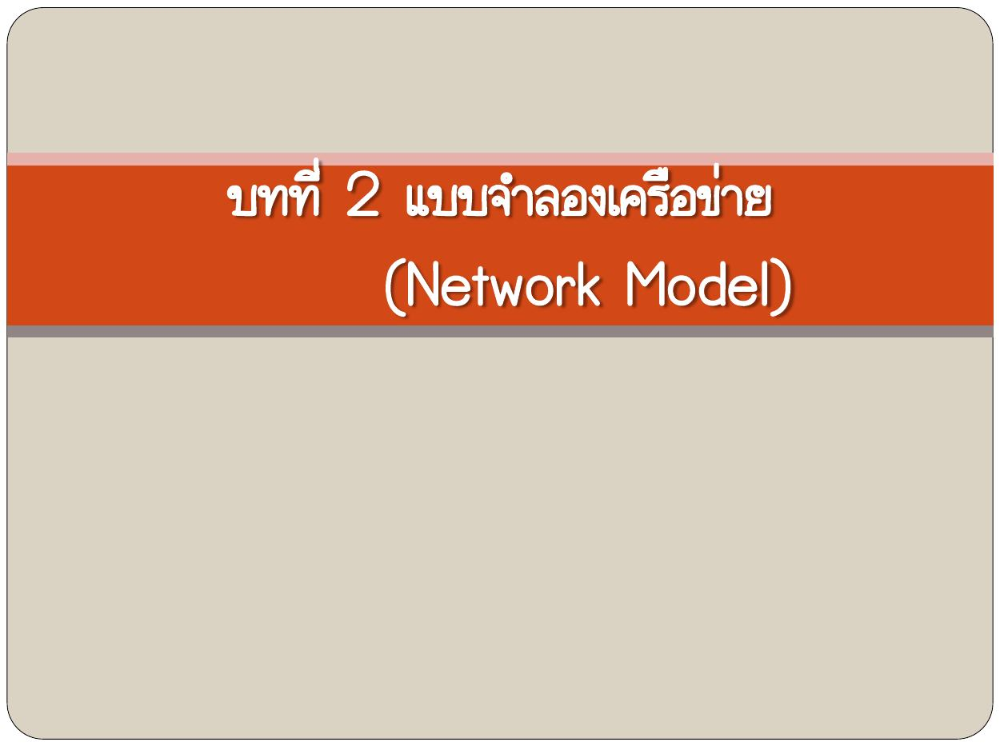
คลิกภาพเพื่อเปิดขยาย
อ่านข้อความต้นฉบับที่สกัดได้ (ไทย/อังกฤษตามไฟล์) บทที่ 2 แบบจาลองเครือข่าย
(Network Model) ทบทวนภาษาไทย: แบบจำลองเครือข่าย OSI และ TCP/IP
กลับสารบัญ ↑ หน้า 2 — องค์กรกาหนดมาตรฐานสากล (ISO) ดูภาพต้นฉบับหน้า 2 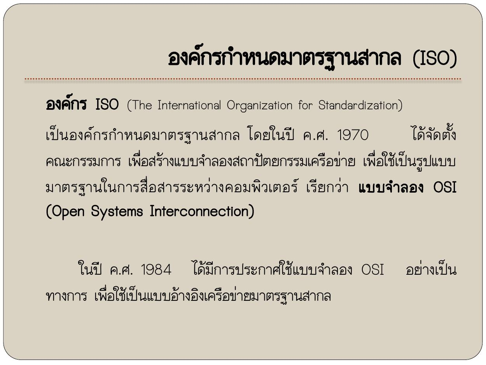
คลิกภาพเพื่อเปิดขยาย
อ่านข้อความต้นฉบับที่สกัดได้ (ไทย/อังกฤษตามไฟล์) องค์กรกาหนดมาตรฐานสากล (ISO)
องค์กร ISO (The International Organization for Standardization)
เป็ น องค์ ก รก าหนดมาตรฐานสากล โดยในปี ค.ศ. 1970 ได้ จั ด ตั้ ง
คณะกรรมการ เพื่อสร้างแบบจาลองสถาปัตยกรรมเครือข่าย เพื่อใช้เป็นรูปแบบ
มาตรฐานในการสื่ อ สารระหว่ า งคอมพิ ว เตอร์ เรี ย กว่ า แบบจ าลอง OSI
(Open Systems Interconnection)
ในปี ค.ศ. 1984 ได้มีการประกาศใช้แบบจาลอง OSI อย่างเป็น
ทางการ เพื่อใช้เป็นแบบอ้างอิงเครือข่ายมาตรฐานสากล ทบทวนภาษาไทย: แบบจำลองเครือข่าย OSI และ TCP/IP
กลับสารบัญ ↑ หน้า 3 — ระบบเปิด (Open System) ดูภาพต้นฉบับหน้า 3 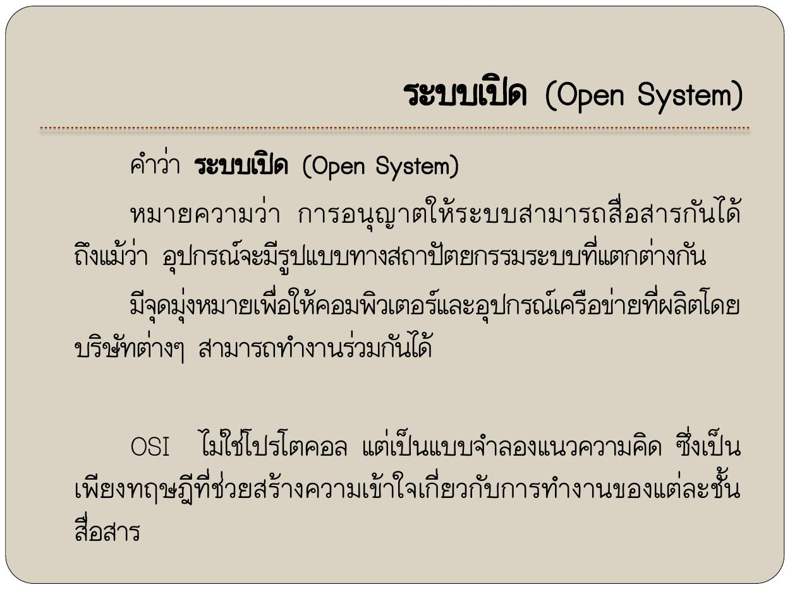
คลิกภาพเพื่อเปิดขยาย
อ่านข้อความต้นฉบับที่สกัดได้ (ไทย/อังกฤษตามไฟล์) ระบบเปิด (Open System)
คาว่า ระบบเปิด (Open System)
หมายความว่ า การอนุ ญ าตให้ ร ะบบสามารถสื่ อ สารกั น ได้
ถึงแม้ว่า อุปกรณ์จะมีรูปแบบทางสถาปัตยกรรมระบบที่แตกต่างกัน
มีจุดมุ่งหมายเพื่อให้คอมพิวเตอร์และอุปกรณ์เครือข่ายที่ผลิตโดย
บริษัทต่างๆ สามารถทางานร่วมกันได้
OSI ไม่ใช่โปรโตคอล แต่เป็นแบบจาลองแนวความคิด ซึ่งเป็น
เพียงทฤษฎีที่ช่วยสร้างความเข้าใจเกี่ยวกับการทางานของแต่ละชั้ น
สื่อสาร ทบทวนภาษาไทย: แบบจำลองเครือข่าย OSI และ TCP/IP
กลับสารบัญ ↑ หน้า 4 — แบบจาลอง OSI ดูภาพต้นฉบับหน้า 4 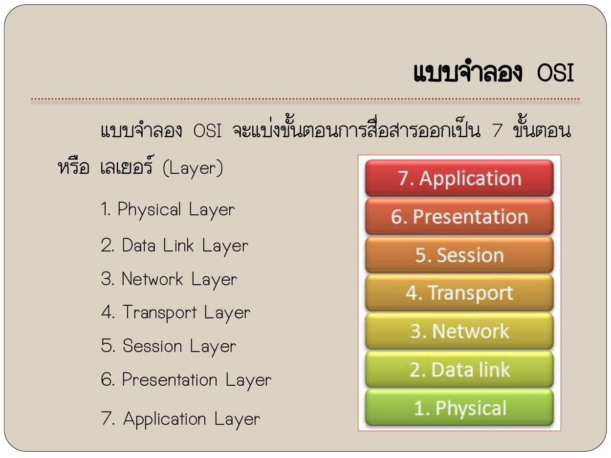
คลิกภาพเพื่อเปิดขยาย
อ่านข้อความต้นฉบับที่สกัดได้ (ไทย/อังกฤษตามไฟล์) แบบจาลอง OSI
แบบจาลอง OSI จะแบ่งขั้นตอนการสื่อสารออกเป็น 7 ขั้นตอน
หรือ เลเยอร์ (Layer)
1. Physical Layer
2. Data Link Layer
3. Network Layer
4. Transport Layer
5. Session Layer
6. Presentation Layer
7. Application Layer ทบทวนภาษาไทย: แบบจำลองเครือข่าย OSI และ TCP/IP
กลับสารบัญ ↑ หน้า 5 — แนวความคิดในการแบ่งชั้นสือ่ สาร ดูภาพต้นฉบับหน้า 5 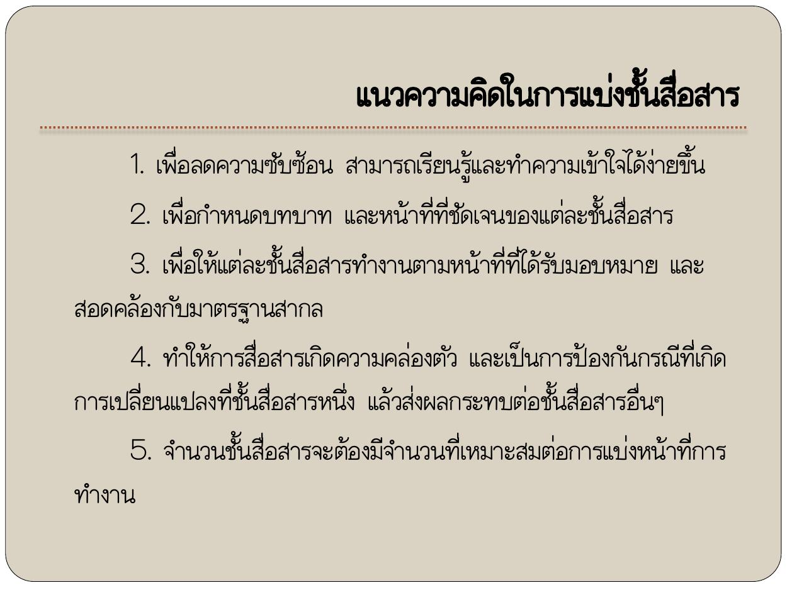
คลิกภาพเพื่อเปิดขยาย
อ่านข้อความต้นฉบับที่สกัดได้ (ไทย/อังกฤษตามไฟล์) แนวความคิดในการแบ่งชั้นสือ่ สาร
1. เพื่อลดความซับซ้อน สามารถเรียนรู้และทาความเข้าใจได้งา่ ยขึ้น
2. เพื่อกาหนดบทบาท และหน้าที่ที่ชัดเจนของแต่ละชั้นสื่อสาร
3. เพื่อให้แต่ละชั้นสือ่ สารทางานตามหน้าที่ที่ได้รบั มอบหมาย และ
สอดคล้องกับมาตรฐานสากล
4. ทาให้การสือ่ สารเกิดความคล่องตัว และเป็นการป้องกันกรณีที่เกิด
การเปลี่ยนแปลงที่ชั้นสือ่ สารหนึ่ง แล้วส่งผลกระทบต่อชั้นสื่อสารอื่นๆ
5. จานวนชั้นสื่อสารจะต้องมีจานวนที่เหมาะสมต่อการแบ่งหน้าที่การ
ทางาน ทบทวนภาษาไทย: แบบจำลองเครือข่าย OSI และ TCP/IP
กลับสารบัญ ↑ หน้า 6 — การส่งผ่านข้อมูลบนแบบจาลอง OSI ดูภาพต้นฉบับหน้า 6 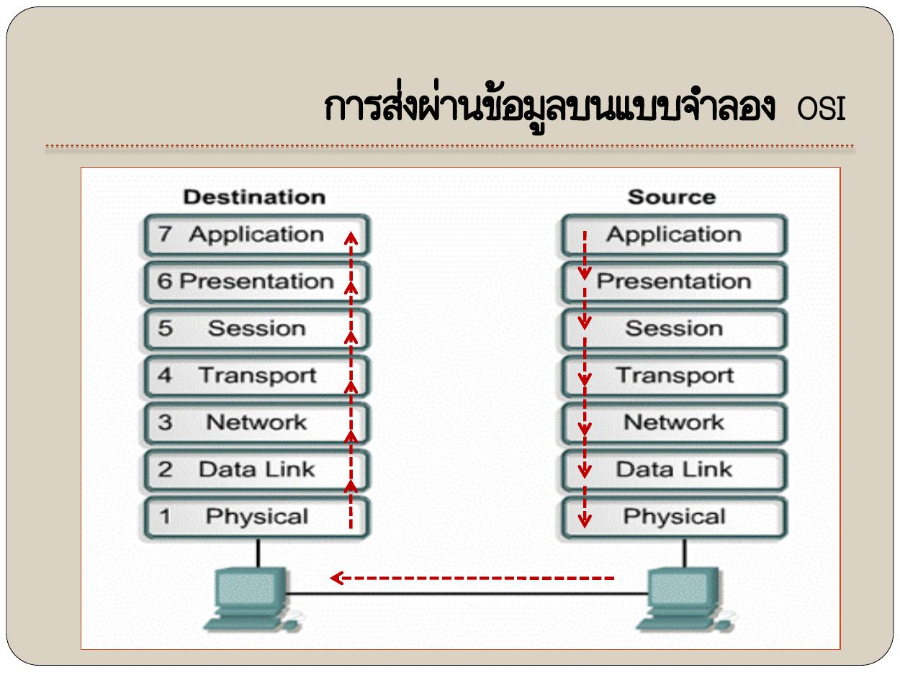
คลิกภาพเพื่อเปิดขยาย
อ่านข้อความต้นฉบับที่สกัดได้ (ไทย/อังกฤษตามไฟล์) การส่งผ่านข้อมูลบนแบบจาลอง OSI ทบทวนภาษาไทย: แบบจำลองเครือข่าย OSI และ TCP/IP
กลับสารบัญ ↑ หน้า 7 — Peer-to-Peer Processes ดูภาพต้นฉบับหน้า 7 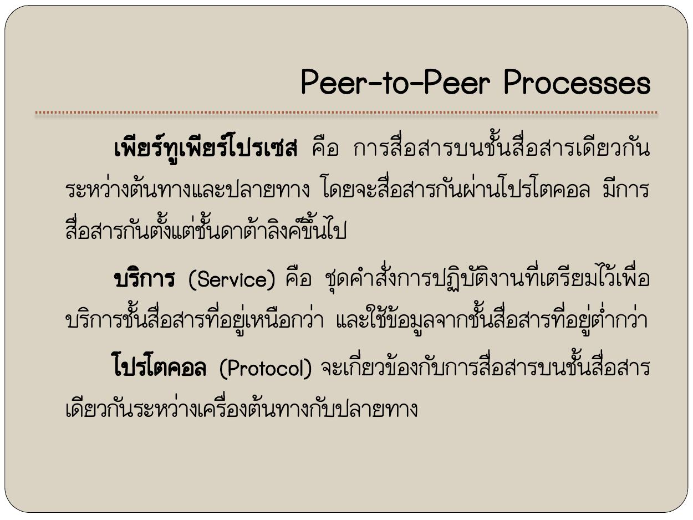
คลิกภาพเพื่อเปิดขยาย
อ่านข้อความต้นฉบับที่สกัดได้ (ไทย/อังกฤษตามไฟล์) Peer-to-Peer Processes
เพี ย ร์ ทู เ พี ย ร์ โ ปรเซส คื อ การสื่ อ สารบนชั้ น สื่ อ สารเดี ย วกั น
ระหว่างต้นทางและปลายทาง โดยจะสื่อสารกันผ่านโปรโตคอล มีการ
สื่อสารกันตั้งแต่ชั้นดาต้าลิงค์ขึ้นไป
บริการ (Service) คือ ชุดคาสั่งการปฏิบัติงานที่เตรียมไว้เพื่อ
บริการชั้นสื่อสารที่อยู่เหนือกว่า และใช้ข้อมูลจากชั้นสื่อสารที่อยู่ต่ากว่า
โปรโตคอล (Protocol) จะเกี่ยวข้องกับการสื่อสารบนชั้นสื่อสาร
เดียวกันระหว่างเครื่องต้นทางกับปลายทาง ทบทวนภาษาไทย: แบบจำลองเครือข่าย OSI และ TCP/IP
กลับสารบัญ ↑ หน้า 8 — การสื่อสารระหว่างเลเยอร์ในแบบจาลอง OSI ดูภาพต้นฉบับหน้า 8 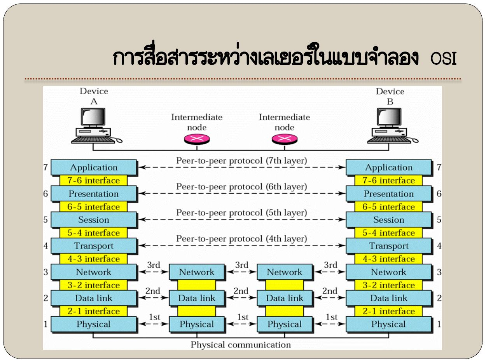
คลิกภาพเพื่อเปิดขยาย
อ่านข้อความต้นฉบับที่สกัดได้ (ไทย/อังกฤษตามไฟล์) การสื่อสารระหว่างเลเยอร์ในแบบจาลอง OSI ทบทวนภาษาไทย: แบบจำลองเครือข่าย OSI และ TCP/IP
กลับสารบัญ ↑ หน้า 9 — การจัดองค์ประกอบของชั้นสือ่ สาร ดูภาพต้นฉบับหน้า 9 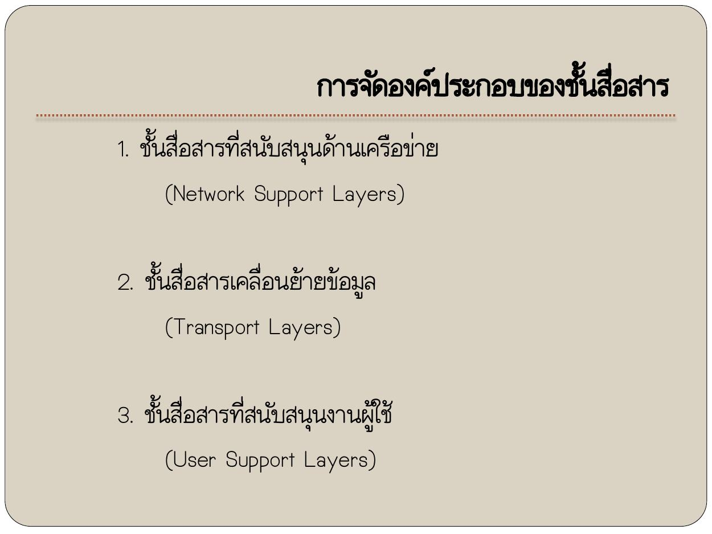
คลิกภาพเพื่อเปิดขยาย
อ่านข้อความต้นฉบับที่สกัดได้ (ไทย/อังกฤษตามไฟล์) การจัดองค์ประกอบของชั้นสือ่ สาร
1. ชั้นสื่อสารที่สนับสนุนด้านเครือข่าย
(Network Support Layers)
2. ชั้นสื่อสารเคลื่อนย้ายข้อมูล
(Transport Layers)
3. ชั้นสื่อสารที่สนับสนุนงานผู้ใช้
(User Support Layers) ทบทวนภาษาไทย: แบบจำลองเครือข่าย OSI และ TCP/IP
กลับสารบัญ ↑ หน้า 10 — ชัน้ สือ่ สารที่สนับสนุนด้านเครือข่าย ดูภาพต้นฉบับหน้า 10 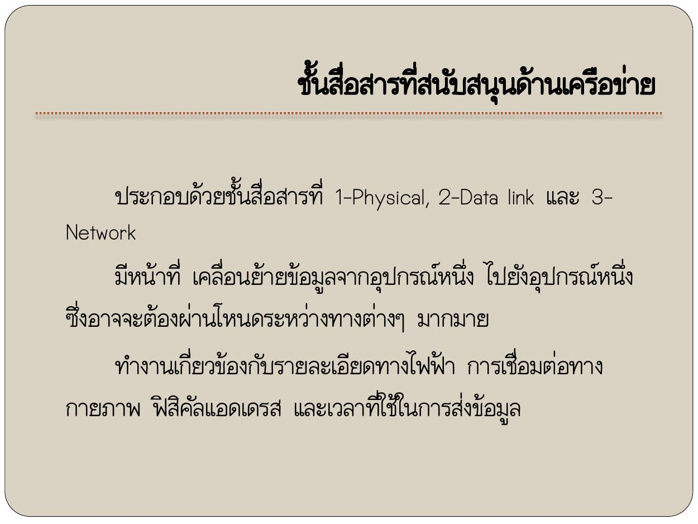
คลิกภาพเพื่อเปิดขยาย
อ่านข้อความต้นฉบับที่สกัดได้ (ไทย/อังกฤษตามไฟล์) ชัน้ สือ่ สารที่สนับสนุนด้านเครือข่าย
ประกอบด้วยชั้นสื่อสารที่ 1-Physical, 2-Data link และ 3-
Network
มีหน้าที่ เคลื่อนย้ายข้อมูลจากอุปกรณ์หนึ่ง ไปยังอุปกรณ์หนึ่ง
ซึ่งอาจจะต้องผ่านโหนดระหว่างทางต่างๆ มากมาย
ทางานเกี่ยวข้องกับรายละเอียดทางไฟฟ้า การเชื่อมต่อทาง
กายภาพ ฟิสิคัลแอดเดรส และเวลาที่ใช้ในการส่งข้อมูล ทบทวนภาษาไทย: แบบจำลองเครือข่าย OSI และ TCP/IP
กลับสารบัญ ↑ หน้า 11 — ชัน้ สือ่ สารเคลือ่ นย้ายข้อมูล ดูภาพต้นฉบับหน้า 11 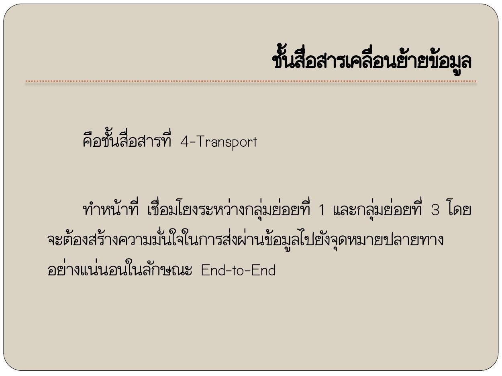
คลิกภาพเพื่อเปิดขยาย
อ่านข้อความต้นฉบับที่สกัดได้ (ไทย/อังกฤษตามไฟล์) ชัน้ สือ่ สารเคลือ่ นย้ายข้อมูล
คือชั้นสื่อสารที่ 4-Transport
ทาหน้าที่ เชื่อมโยงระหว่างกลุ่มย่อยที่ 1 และกลุ่มย่อยที่ 3 โดย
จะต้องสร้างความมั่นใจในการส่งผ่านข้อมูลไปยังจุดหมายปลายทาง
อย่างแน่นอนในลักษณะ End-to-End ทบทวนภาษาไทย: แบบจำลองเครือข่าย OSI และ TCP/IP
กลับสารบัญ ↑ หน้า 12 — ชัน้ สือ่ สารที่สนับสนุนงานผูใ้ ช้ ดูภาพต้นฉบับหน้า 12 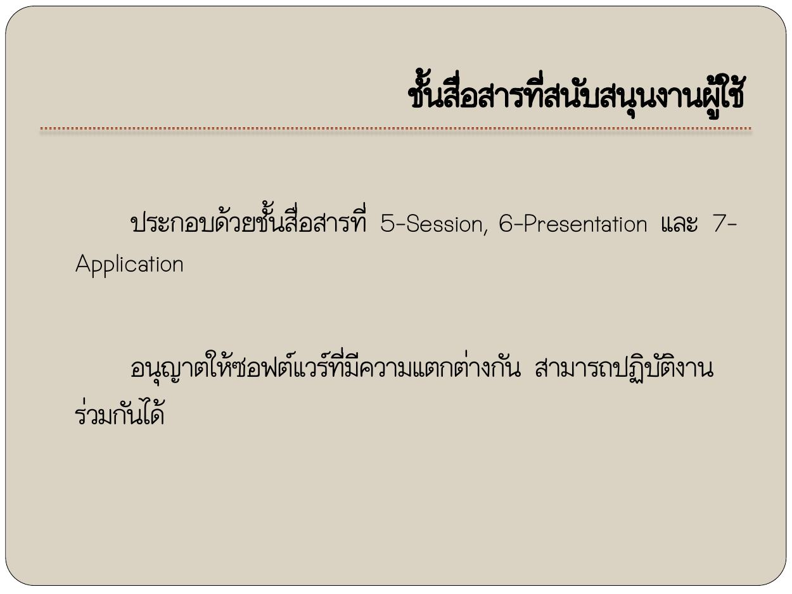
คลิกภาพเพื่อเปิดขยาย
อ่านข้อความต้นฉบับที่สกัดได้ (ไทย/อังกฤษตามไฟล์) ชัน้ สือ่ สารที่สนับสนุนงานผูใ้ ช้
ประกอบด้วยชั้นสื่อสารที่ 5-Session, 6-Presentation และ 7-
Application
อนุญาตให้ซอฟต์แวร์ที่มีความแตกต่างกัน สามารถปฏิบัติงาน
ร่วมกันได้ ทบทวนภาษาไทย: แบบจำลองเครือข่าย OSI และ TCP/IP
กลับสารบัญ ↑ หน้า 13 — ภาพรวมของการทางานบนแบบจาลอง OSI ดูภาพต้นฉบับหน้า 13 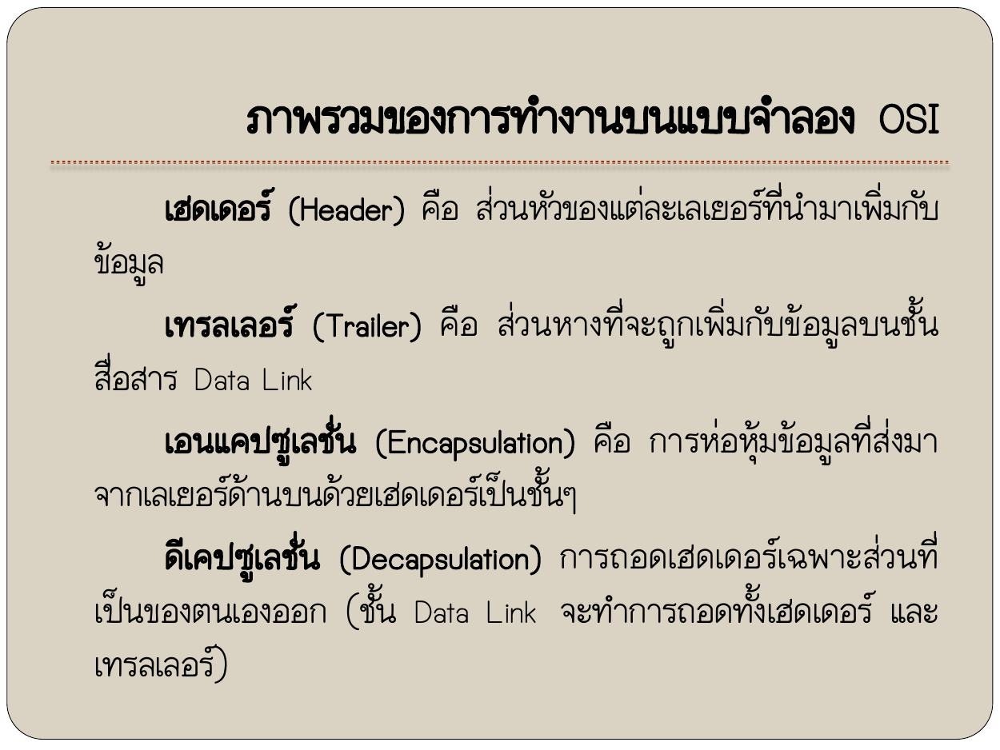
คลิกภาพเพื่อเปิดขยาย
อ่านข้อความต้นฉบับที่สกัดได้ (ไทย/อังกฤษตามไฟล์) ภาพรวมของการทางานบนแบบจาลอง OSI
เฮดเดอร์ (Header) คือ ส่วนหัวของแต่ละเลเยอร์ที่นามาเพิ่มกับ
ข้อมูล
เทรลเลอร์ (Trailer) คือ ส่วนหางที่จะถูกเพิ่มกับข้อมูลบนชั้น
สื่อสาร Data Link
เอนแคปซูเลชั่น (Encapsulation) คือ การห่อหุ้มข้อมูลที่ส่งมา
จากเลเยอร์ด้านบนด้วยเฮดเดอร์เป็นชั้นๆ
ดีเคปซูเลชั่น (Decapsulation) การถอดเฮดเดอร์เฉพาะส่วนที่
เป็นของตนเองออก (ชั้น Data Link จะทาการถอดทั้งเฮดเดอร์ และ
เทรลเลอร์) ทบทวนภาษาไทย: แบบจำลองเครือข่าย OSI และ TCP/IP
กลับสารบัญ ↑ หน้า 14 — ภาพรวมของการทางานบนแบบจาลอง OSI ดูภาพต้นฉบับหน้า 14 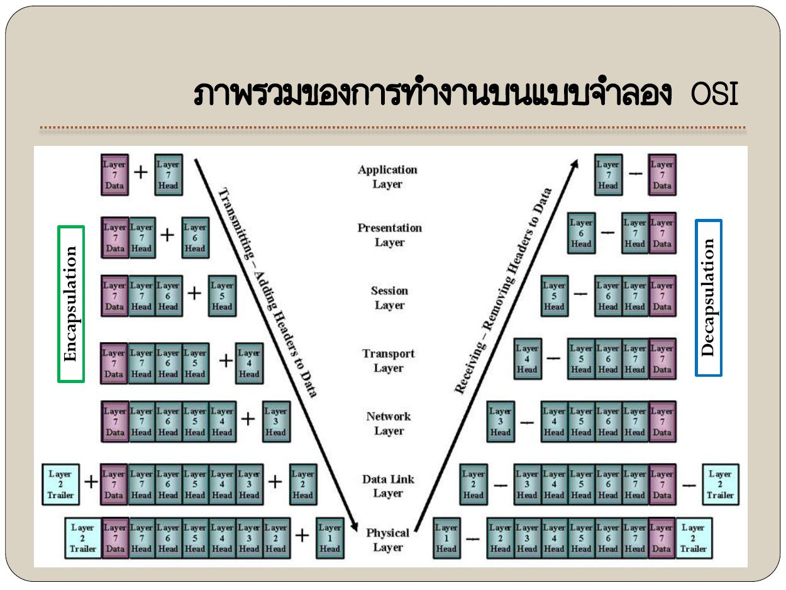
คลิกภาพเพื่อเปิดขยาย
อ่านข้อความต้นฉบับที่สกัดได้ (ไทย/อังกฤษตามไฟล์) ภาพรวมของการทางานบนแบบจาลอง OSI
Decapsulation
Encapsulation ทบทวนภาษาไทย: แบบจำลองเครือข่าย OSI และ TCP/IP
กลับสารบัญ ↑ หน้า 15 — ชัน้ สื่อสารในแบบจาลอง OSI ดูภาพต้นฉบับหน้า 15 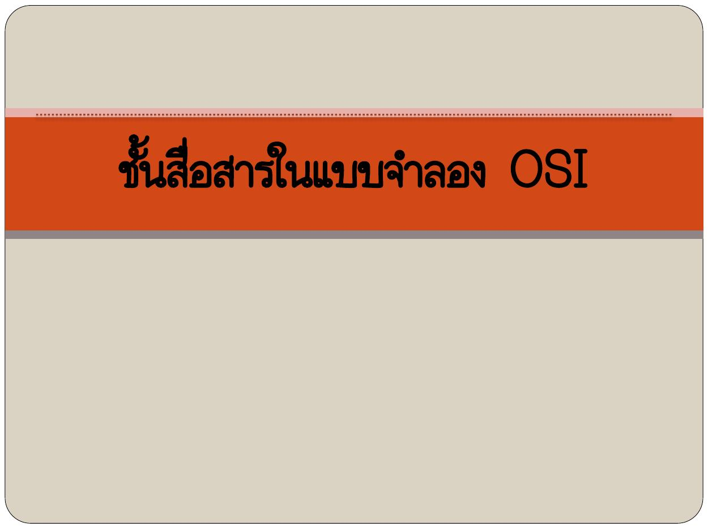
คลิกภาพเพื่อเปิดขยาย
อ่านข้อความต้นฉบับที่สกัดได้ (ไทย/อังกฤษตามไฟล์) ชัน้ สื่อสารในแบบจาลอง OSI ทบทวนภาษาไทย: แบบจำลองเครือข่าย OSI และ TCP/IP
กลับสารบัญ ↑ หน้า 16 — ชัน้ สือ่ สารฟิสิคัล Physical Layer ดูภาพต้นฉบับหน้า 16 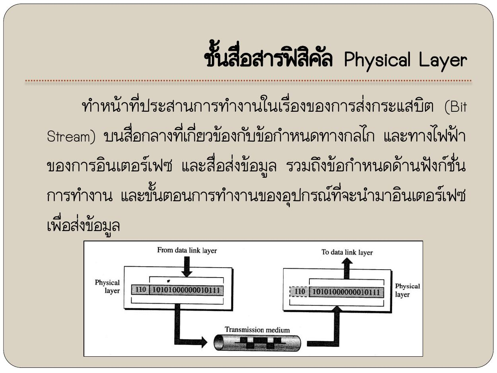
คลิกภาพเพื่อเปิดขยาย
อ่านข้อความต้นฉบับที่สกัดได้ (ไทย/อังกฤษตามไฟล์) ชัน้ สือ่ สารฟิสิคัล Physical Layer
ทาหน้าที่ประสานการทางานในเรื่องของการส่งกระแสบิต (Bit
Stream) บนสื่อกลางที่เกี่ยวข้องกับข้อกาหนดทางกลไก และทางไฟฟ้า
ของการอินเตอร์เฟซ และสื่อส่งข้อมูล รวมถึงข้อกาหนดด้านฟังก์ชั่น
การทางาน และขั้นตอนการทางานของอุปกรณ์ที่จะนามาอินเตอร์เฟซ
เพื่อส่งข้อมูล ทบทวนภาษาไทย: แบบจำลองเครือข่าย OSI และ TCP/IP
กลับสารบัญ ↑ หน้า 17 — ภาระหน้าทีข่ องชัน้ สือ่ สารฟิสคิ ลั ดูภาพต้นฉบับหน้า 17 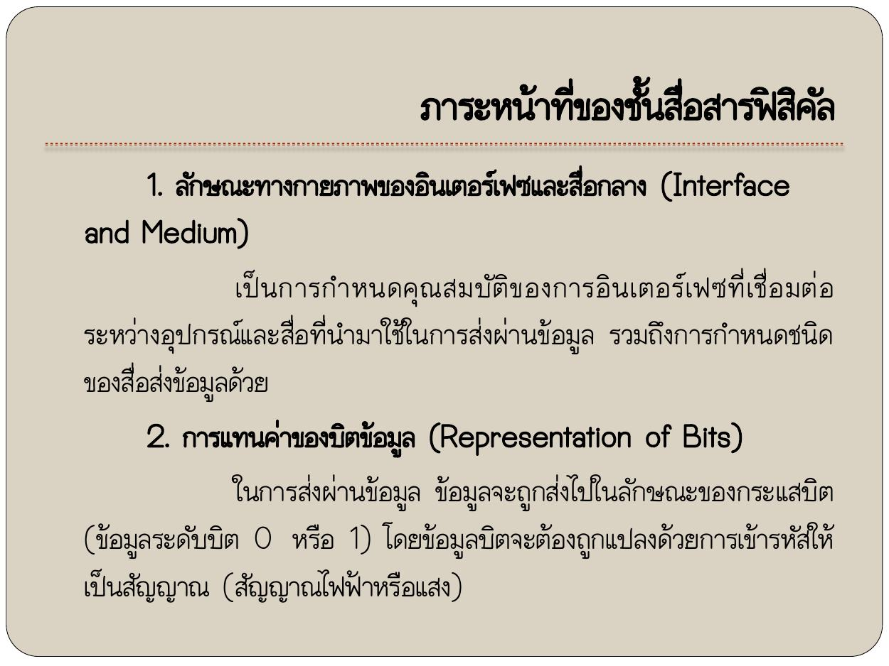
คลิกภาพเพื่อเปิดขยาย
อ่านข้อความต้นฉบับที่สกัดได้ (ไทย/อังกฤษตามไฟล์) ภาระหน้าทีข่ องชัน้ สือ่ สารฟิสคิ ลั
1. ลักษณะทางกายภาพของอินเตอร์เฟซและสื่อกลาง (Interface
and Medium)
เป็ น การก าหนดคุ ณ สมบั ติ ข องการอิ น เตอร์ เ ฟซที่ เ ชื่ อ มต่ อ
ระหว่างอุปกรณ์และสื่อที่นามาใช้ในการส่งผ่านข้อมูล รวมถึงการกาหนดชนิด
ของสื่อส่งข้อมูลด้วย
2. การแทนค่าของบิตข้อมูล (Representation of Bits)
ในการส่งผ่านข้อมูล ข้อมูลจะถูกส่งไปในลักษณะของกระแสบิต
(ข้อมูลระดับบิต 0 หรือ 1) โดยข้อมูลบิตจะต้องถูกแปลงด้วยการเข้ารหัสให้
เป็นสัญญาณ (สัญญาณไฟฟ้าหรือแสง) ทบทวนภาษาไทย: แบบจำลองเครือข่าย OSI และ TCP/IP
กลับสารบัญ ↑ หน้า 18 — ภาระหน้าทีข่ องชัน้ สือ่ สารฟิสคิ ลั ดูภาพต้นฉบับหน้า 18 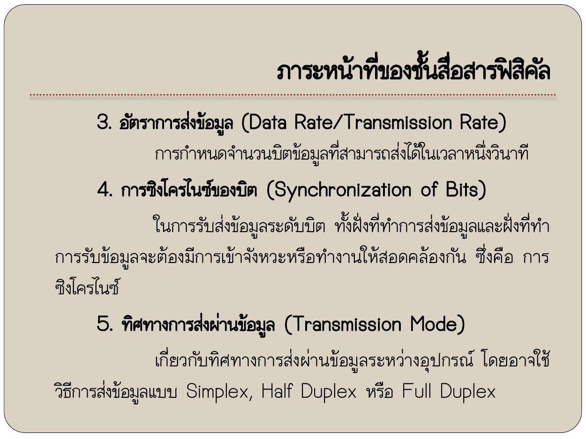
คลิกภาพเพื่อเปิดขยาย
อ่านข้อความต้นฉบับที่สกัดได้ (ไทย/อังกฤษตามไฟล์) ภาระหน้าทีข่ องชัน้ สือ่ สารฟิสคิ ลั
3. อัตราการส่งข้อมูล (Data Rate/Transmission Rate)
การกาหนดจานวนบิตข้อมูลที่สามารถส่งได้ในเวลาหนึ่งวินาที
4. การซิงโครไนซ์ของบิต (Synchronization of Bits)
ในการรับส่งข้อมูลระดับบิต ทั้งฝั่งที่ทาการส่งข้อมูลและฝั่งที่ทา
การรับข้อมูลจะต้องมีการเข้าจังหวะหรือทางานให้สอดคล้องกัน ซึ่งคือ การ
ซิงโครไนซ์
5. ทิศทางการส่งผ่านข้อมูล (Transmission Mode)
เกี่ยวกับทิศทางการส่งผ่านข้อมูลระหว่างอุปกรณ์ โดยอาจใช้
วิธีการส่งข้อมูลแบบ Simplex, Half Duplex หรือ Full Duplex ทบทวนภาษาไทย: แบบจำลองเครือข่าย OSI และ TCP/IP
กลับสารบัญ ↑ หน้า 19 — ภาระหน้าทีข่ องชัน้ สือ่ สารฟิสคิ ลั ดูภาพต้นฉบับหน้า 19 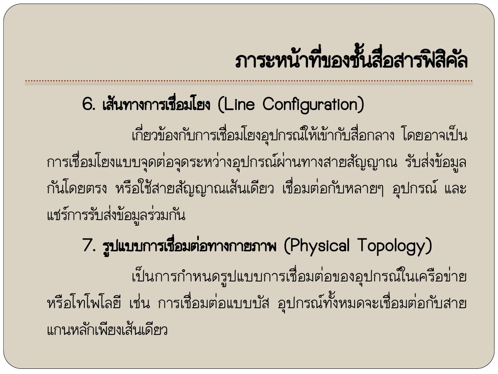
คลิกภาพเพื่อเปิดขยาย
อ่านข้อความต้นฉบับที่สกัดได้ (ไทย/อังกฤษตามไฟล์) ภาระหน้าทีข่ องชัน้ สือ่ สารฟิสคิ ลั
6. เส้นทางการเชื่อมโยง (Line Configuration)
เกี่ยวข้องกับการเชื่อมโยงอุปกรณ์ให้เข้ากับสื่อกลาง โดยอาจเป็น
การเชื่อมโยงแบบจุดต่อจุดระหว่างอุปกรณ์ผ่านทางสายสัญญาณ รับส่งข้อมูล
กันโดยตรง หรือใช้สายสัญญาณเส้นเดียว เชื่อมต่อกับหลายๆ อุปกรณ์ และ
แชร์การรับส่งข้อมูลร่วมกัน
7. รูปแบบการเชือ่ มต่อทางกายภาพ (Physical Topology)
เป็นการกาหนดรูปแบบการเชื่ อมต่อของอุปกรณ์ในเครือข่าย
หรือโทโพโลยี เช่น การเชื่อมต่อแบบบัส อุปกรณ์ทั้งหมดจะเชื่อมต่อกับสาย
แกนหลักเพียงเส้นเดียว ทบทวนภาษาไทย: แบบจำลองเครือข่าย OSI และ TCP/IP
กลับสารบัญ ↑ หน้า 20 — ชัน้ สือ่ สารดาต้าลิงค์ Data Link Layer ดูภาพต้นฉบับหน้า 20 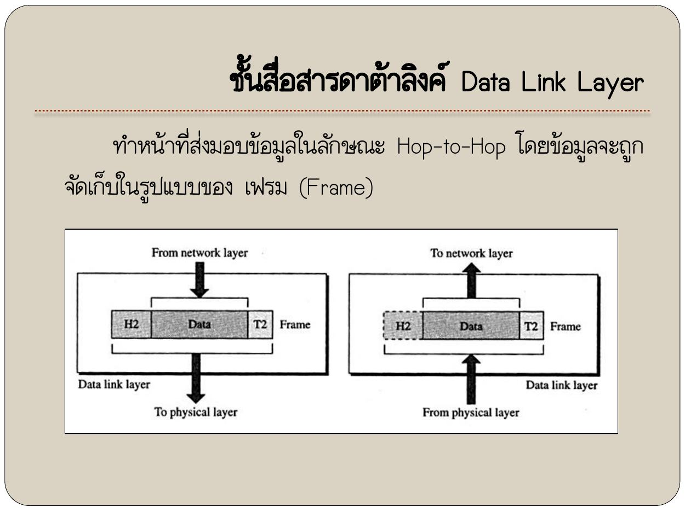
คลิกภาพเพื่อเปิดขยาย
อ่านข้อความต้นฉบับที่สกัดได้ (ไทย/อังกฤษตามไฟล์) ชัน้ สือ่ สารดาต้าลิงค์ Data Link Layer
ทาหน้าที่ส่งมอบข้อมูลในลักษณะ Hop-to-Hop โดยข้อมูลจะถูก
จัดเก็บในรูปแบบของ เฟรม (Frame) ทบทวนภาษาไทย: แบบจำลองเครือข่าย OSI และ TCP/IP
กลับสารบัญ ↑ หน้า 21 — ชัน้ สือ่ สารดาต้าลิงค์ Data Link Layer ดูภาพต้นฉบับหน้า 21 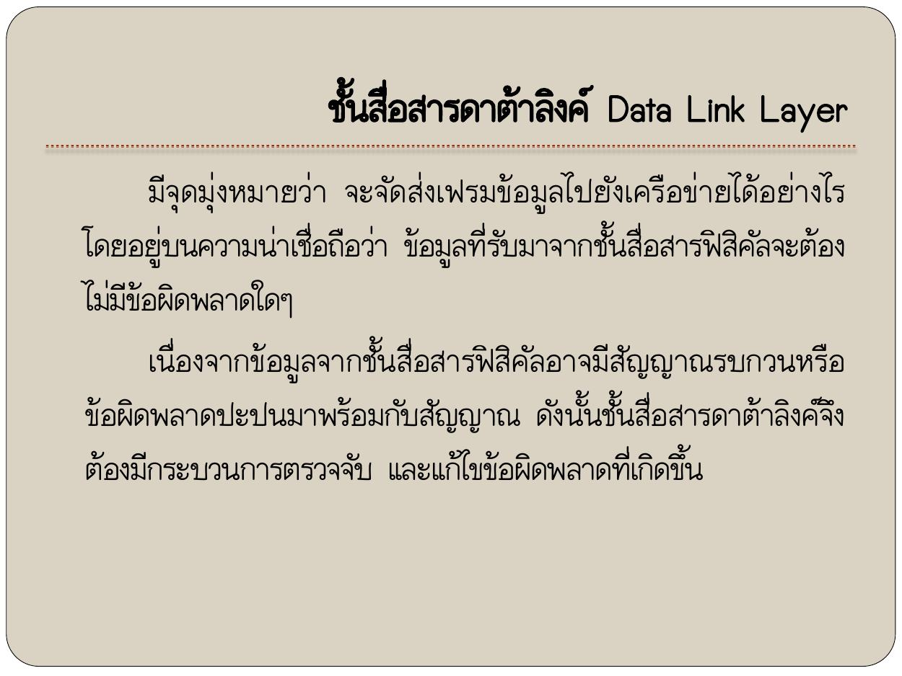
คลิกภาพเพื่อเปิดขยาย
อ่านข้อความต้นฉบับที่สกัดได้ (ไทย/อังกฤษตามไฟล์) ชัน้ สือ่ สารดาต้าลิงค์ Data Link Layer
มีจุดมุ่งหมายว่า จะจัดส่งเฟรมข้อมูลไปยังเครือข่ายได้อย่างไร
โดยอยู่บนความน่าเชื่อถือว่า ข้อมูลที่รับมาจากชั้นสื่อสารฟิสิคัลจะต้อง
ไม่มีข้อผิดพลาดใดๆ
เนื่องจากข้อมูลจากชั้นสื่อสารฟิสิคัลอาจมีสัญญาณรบกวนหรือ
ข้อผิดพลาดปะปนมาพร้อมกับสัญญาณ ดังนั้นชั้นสื่อสารดาต้าลิงค์จึง
ต้องมีกระบวนการตรวจจับ และแก้ไขข้อผิดพลาดที่เกิดขึ้น ทบทวนภาษาไทย: แบบจำลองเครือข่าย OSI และ TCP/IP
กลับสารบัญ ↑ หน้า 22 — ภาระหน้าทีข่ องชัน้ สือ่ สารดาต้าลิงค์ ดูภาพต้นฉบับหน้า 22 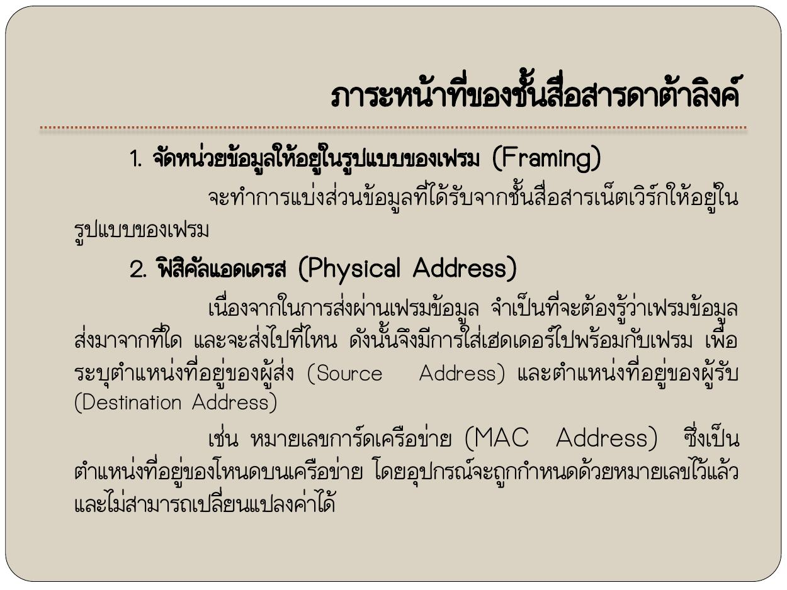
คลิกภาพเพื่อเปิดขยาย
อ่านข้อความต้นฉบับที่สกัดได้ (ไทย/อังกฤษตามไฟล์) ภาระหน้าทีข่ องชัน้ สือ่ สารดาต้าลิงค์
1. จัดหน่วยข้อมูลให้อยู่ในรูปแบบของเฟรม (Framing)
จะทาการแบ่งส่วนข้อมูลที่ได้รับจากชั้นสื่อสารเน็ตเวิร์กให้อยู่ใน
รูปแบบของเฟรม
2. ฟิสิคัลแอดเดรส (Physical Address)
เนื่องจากในการส่งผ่านเฟรมข้อมูล จาเป็นที่จะต้องรู้ว่าเฟรมข้อมูล
ส่งมาจากที่ใด และจะส่งไปที่ไหน ดังนั้นจึงมีการใส่เฮดเดอร์ไปพร้อมกับเฟรม เพื่อ
ระบุตาแหน่งที่อยู่ของผู้ส่ง (Source Address) และตาแหน่งที่อยู่ของผู้รับ
(Destination Address)
เช่น หมายเลขการ์ดเครือข่าย (MAC Address) ซึ่งเป็น
ตาแหน่งที่อยู่ของโหนดบนเครือข่าย โดยอุปกรณ์จะถูกกาหนดด้วยหมายเลขไว้แล้ว
และไม่สามารถเปลี่ยนแปลงค่าได้ ทบทวนภาษาไทย: แบบจำลองเครือข่าย OSI และ TCP/IP
กลับสารบัญ ↑ หน้า 23 — ภาระหน้าทีข่ องชัน้ สือ่ สารดาต้าลิงค์ ดูภาพต้นฉบับหน้า 23 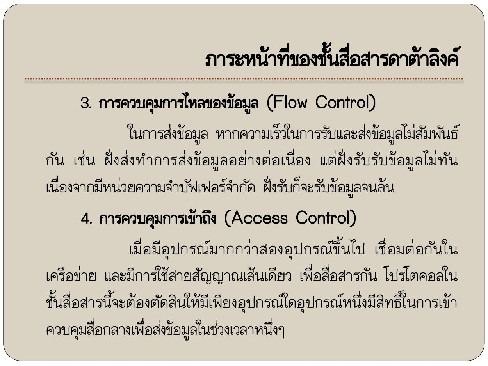
คลิกภาพเพื่อเปิดขยาย
อ่านข้อความต้นฉบับที่สกัดได้ (ไทย/อังกฤษตามไฟล์) ภาระหน้าทีข่ องชัน้ สือ่ สารดาต้าลิงค์
3. การควบคุมการไหลของข้อมูล (Flow Control)
ในการส่งข้อมูล หากความเร็วในการรับและส่งข้อมูลไม่สัมพันธ์
กั น เช่ น ฝั่ ง ส่ ง ท าการส่ ง ข้ อ มู ล อย่ า งต่ อ เนื่ อ ง แต่ ฝั่ ง รั บ รั บ ข้ อ มู ล ไม่ ทั น
เนื่องจากมีหน่วยความจาบัฟเฟอร์จากัด ฝั่งรับก็จะรับข้อมูลจนล้น
4. การควบคุมการเข้าถึง (Access Control)
เมื่ อ มี อุ ป กรณ์ ม ากกว่ า สองอุ ป กรณ์ ขึ้ น ไป เชื่ อ มต่ อ กั น ใน
เครือข่าย และมีการใช้สายสัญญาณเส้นเดียว เพื่อสื่อสารกัน โปรโตคอลใน
ชั้นสื่อสารนี้จะต้องตัดสินให้มีเพียงอุปกรณ์ใดอุปกรณ์หนึ่งมีสิทธิ์ในการเข้า
ควบคุมสื่อกลางเพื่อส่งข้อมูลในช่วงเวลาหนึ่งๆ ทบทวนภาษาไทย: แบบจำลองเครือข่าย OSI และ TCP/IP
กลับสารบัญ ↑ หน้า 24 — ภาระหน้าทีข่ องชัน้ สือ่ สารดาต้าลิงค์ ดูภาพต้นฉบับหน้า 24 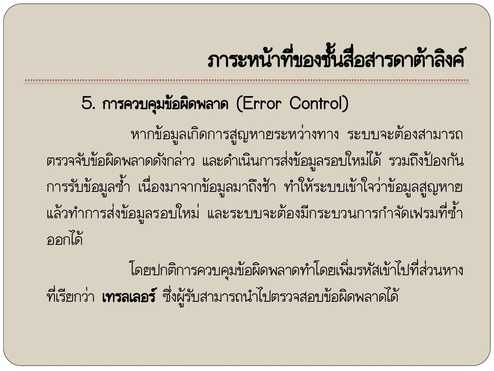
คลิกภาพเพื่อเปิดขยาย
อ่านข้อความต้นฉบับที่สกัดได้ (ไทย/อังกฤษตามไฟล์) ภาระหน้าทีข่ องชัน้ สือ่ สารดาต้าลิงค์
5. การควบคุมข้อผิดพลาด (Error Control)
หากข้อมูลเกิดการสูญหายระหว่างทาง ระบบจะต้องสามารถ
ตรวจจับข้อผิดพลาดดังกล่าว และดาเนินการส่งข้อมูลรอบใหม่ได้ รวมถึงป้องกัน
การรับข้อมูลซ้า เนื่องมาจากข้อมูลมาถึงช้า ทาให้ระบบเข้าใจว่าข้อมูลสูญหาย
แล้วทาการส่งข้อมูลรอบใหม่ และระบบจะต้องมีกระบวนการกาจัดเฟรมที่ซ้า
ออกได้
โดยปกติการควบคุมข้อผิดพลาดทาโดยเพิ่มรหัสเข้าไปที่ส่วนหาง
ที่เรียกว่า เทรลเลอร์ ซึ่งผู้รับสามารถนาไปตรวจสอบข้อผิดพลาดได้ ทบทวนภาษาไทย: แบบจำลองเครือข่าย OSI และ TCP/IP
กลับสารบัญ ↑ หน้า 25 — การส่งข้อมูลแบบ Hop-to-Hop (A -> F) ดูภาพต้นฉบับหน้า 25 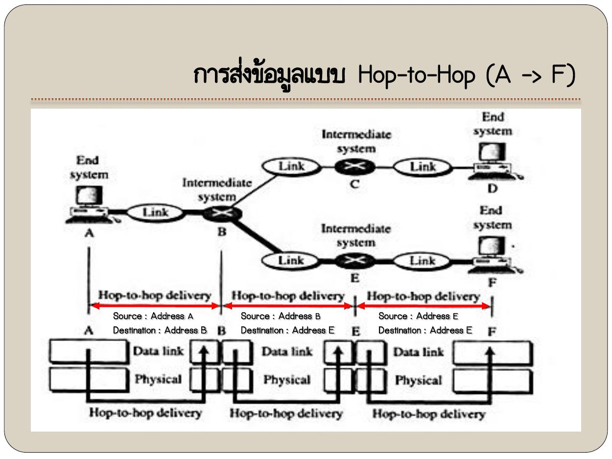
คลิกภาพเพื่อเปิดขยาย
อ่านข้อความต้นฉบับที่สกัดได้ (ไทย/อังกฤษตามไฟล์) การส่งข้อมูลแบบ Hop-to-Hop (A -> F)
Source : Address A Source : Address B Source : Address E
Destination : Address B Destination : Address E Destination : Address E ทบทวนภาษาไทย: แบบจำลองเครือข่าย OSI และ TCP/IP
กลับสารบัญ ↑ หน้า 26 — ชัน้ สือ่ สารเน็ตเวิรก์ Network Layer ดูภาพต้นฉบับหน้า 26 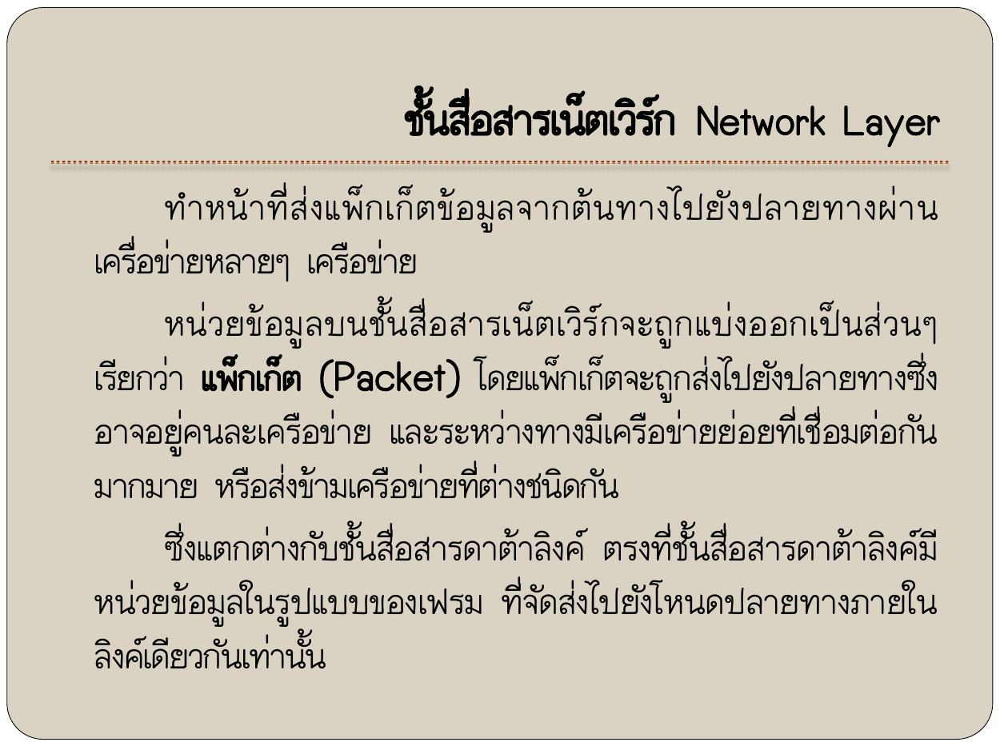
คลิกภาพเพื่อเปิดขยาย
อ่านข้อความต้นฉบับที่สกัดได้ (ไทย/อังกฤษตามไฟล์) ชัน้ สือ่ สารเน็ตเวิรก์ Network Layer
ท าหน้ า ที่ ส่ ง แพ็ ก เก็ ต ข้ อ มู ล จากต้ น ทางไปยั ง ปลายทางผ่ า น
เครื่อข่ายหลายๆ เครือข่าย
หน่ ว ยข้ อ มู ล บนชั้ น สื่ อ สารเน็ ต เวิ ร์ ก จะถู ก แบ่ ง ออกเป็ น ส่ ว นๆ
เรียกว่า แพ็กเก็ต (Packet) โดยแพ็กเก็ตจะถูกส่งไปยังปลายทางซึ่ง
อาจอยู่คนละเครือข่าย และระหว่างทางมีเครือข่ายย่อยที่เชื่อมต่อกัน
มากมาย หรือส่งข้ามเครือข่ายที่ต่างชนิดกัน
ซึ่งแตกต่างกับชั้นสื่อสารดาต้าลิงค์ ตรงที่ชั้นสื่อสารดาต้าลิงค์มี
หน่วยข้อมูลในรูปแบบของเฟรม ที่จัดส่งไปยังโหนดปลายทางภายใน
ลิงค์เดียวกันเท่านั้น ทบทวนภาษาไทย: แบบจำลองเครือข่าย OSI และ TCP/IP
กลับสารบัญ ↑ หน้า 27 — ชัน้ สือ่ สารเน็ตเวิรก์ Network Layer ดูภาพต้นฉบับหน้า 27 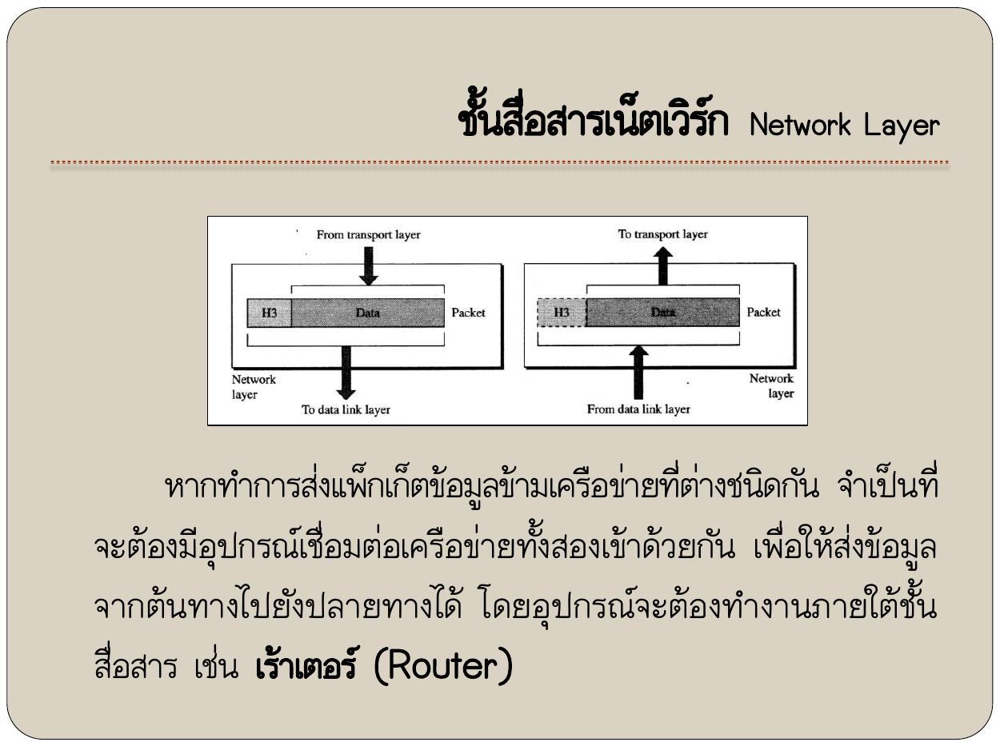
คลิกภาพเพื่อเปิดขยาย
อ่านข้อความต้นฉบับที่สกัดได้ (ไทย/อังกฤษตามไฟล์) ชัน้ สือ่ สารเน็ตเวิรก์ Network Layer
หากทาการส่งแพ็กเก็ตข้อมูลข้ามเครือข่ายที่ต่างชนิดกัน จาเป็นที่
จะต้องมีอุปกรณ์เชื่อมต่อเครือข่ายทั้งสองเข้าด้วยกัน เพื่อให้ส่งข้อมูล
จากต้นทางไปยังปลายทางได้ โดยอุปกรณ์จะต้องทางานภายใต้ชั้น
สื่อสาร เช่น เร้าเตอร์ (Router) ทบทวนภาษาไทย: แบบจำลองเครือข่าย OSI และ TCP/IP
กลับสารบัญ ↑ หน้า 28 — ภาระหน้าทีข่ องชัน้ สือ่ สารเน็ตเวิรก์ ดูภาพต้นฉบับหน้า 28 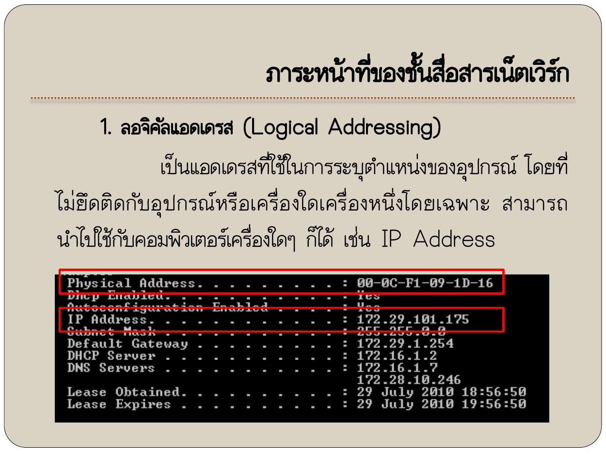
คลิกภาพเพื่อเปิดขยาย
อ่านข้อความต้นฉบับที่สกัดได้ (ไทย/อังกฤษตามไฟล์) ภาระหน้าทีข่ องชัน้ สือ่ สารเน็ตเวิรก์
1. ลอจิคัลแอดเดรส (Logical Addressing)
เป็นแอดเดรสที่ใช้ในการระบุตาแหน่งของอุปกรณ์ โดยที่
ไม่ ยึ ดติ ด กั บ อุ ป กรณ์ หรื อ เครื่ อ งใดเครื่ อ งหนึ่ ง โดยเฉพาะ สามารถ
นาไปใช้กับคอมพิวเตอร์เครื่องใดๆ ก็ได้ เช่น IP Address ทบทวนภาษาไทย: แบบจำลองเครือข่าย OSI และ TCP/IP
กลับสารบัญ ↑ หน้า 29 — ภาระหน้าทีข่ องชัน้ สือ่ สารเน็ตเวิรก์ ดูภาพต้นฉบับหน้า 29 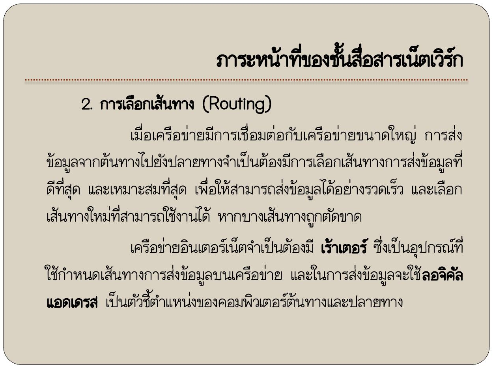
คลิกภาพเพื่อเปิดขยาย
อ่านข้อความต้นฉบับที่สกัดได้ (ไทย/อังกฤษตามไฟล์) ภาระหน้าทีข่ องชัน้ สือ่ สารเน็ตเวิรก์
2. การเลือกเส้นทาง (Routing)
เมื่อเครือข่ ายมีก ารเชื่อมต่ อกับเครือข่ ายขนาดใหญ่ การส่ง
ข้อมูลจากต้นทางไปยังปลายทางจาเป็นต้องมีการเลือกเส้นทางการส่งข้อมูลที่
ดีที่สุด และเหมาะสมที่สุด เพื่อให้สามารถส่งข้อมูลได้อย่างรวดเร็ว และเลือก
เส้นทางใหม่ที่สามารถใช้งานได้ หากบางเส้นทางถูกตัดขาด
เครือข่ายอินเตอร์เน็ตจาเป็นต้องมี เร้าเตอร์ ซึ่งเป็นอุปกรณ์ที่
ใช้กาหนดเส้นทางการส่งข้อมูลบนเครือข่าย และในการส่งข้อมูลจะใช้ ลอจิคัล
แอดเดรส เป็นตัวชี้ตาแหน่งของคอมพิวเตอร์ต้นทางและปลายทาง ทบทวนภาษาไทย: แบบจำลองเครือข่าย OSI และ TCP/IP
กลับสารบัญ ↑ หน้า 30 — การส่งข้อมูลแบบ Source-to-Destination ดูภาพต้นฉบับหน้า 30 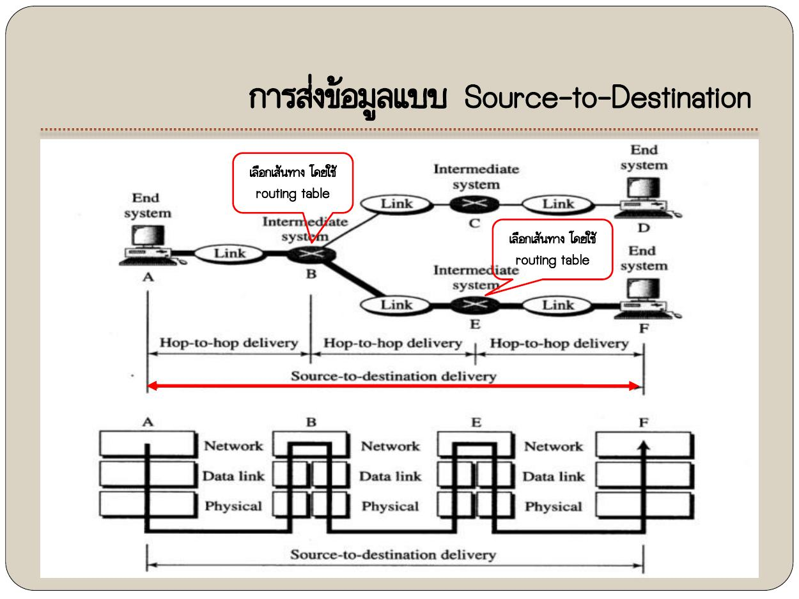
คลิกภาพเพื่อเปิดขยาย
อ่านข้อความต้นฉบับที่สกัดได้ (ไทย/อังกฤษตามไฟล์) การส่งข้อมูลแบบ Source-to-Destination
เลือกเส้นทาง โดยใช้
routing table
เลือกเส้นทาง โดยใช้
routing table ทบทวนภาษาไทย: แบบจำลองเครือข่าย OSI และ TCP/IP
กลับสารบัญ ↑ หน้า 31 — ชัน้ สือ่ สารทรานสปอร์ต Transport Layer ดูภาพต้นฉบับหน้า 31 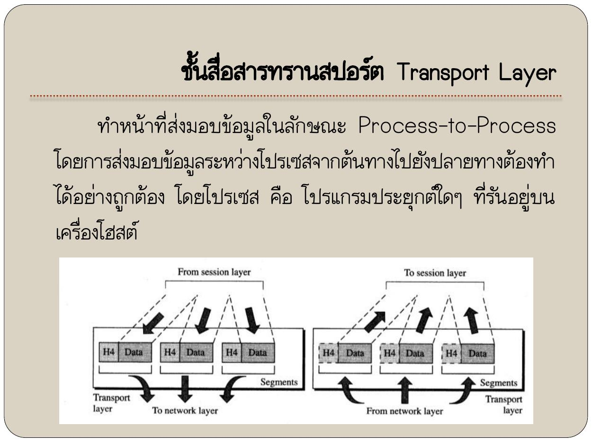
คลิกภาพเพื่อเปิดขยาย
อ่านข้อความต้นฉบับที่สกัดได้ (ไทย/อังกฤษตามไฟล์) ชัน้ สือ่ สารทรานสปอร์ต Transport Layer
ทาหน้าที่ส่งมอบข้อมูลในลักษณะ Process-to-Process
โดยการส่งมอบข้อมูลระหว่างโปรเซสจากต้นทางไปยังปลายทางต้องทา
ได้อย่างถูกต้อง โดยโปรเซส คือ โปรแกรมประยุกต์ใดๆ ที่รันอยู่บน
เครื่องโฮสต์ ทบทวนภาษาไทย: แบบจำลองเครือข่าย OSI และ TCP/IP
กลับสารบัญ ↑ หน้า 32 — ภาระหน้าทีข่ องชัน้ สือ่ สารทรานสปอร์ต ดูภาพต้นฉบับหน้า 32 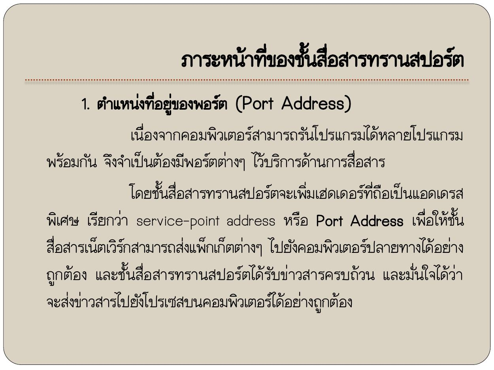
คลิกภาพเพื่อเปิดขยาย
อ่านข้อความต้นฉบับที่สกัดได้ (ไทย/อังกฤษตามไฟล์) ภาระหน้าทีข่ องชัน้ สือ่ สารทรานสปอร์ต
1. ตาแหน่งที่อยู่ของพอร์ต (Port Address)
เนื่องจากคอมพิวเตอร์สามารถรันโปรแกรมได้หลายโปรแกรม
พร้อมกัน จึงจาเป็นต้องมีพอร์ตต่างๆ ไว้บริการด้านการสื่อสาร
โดยชั้นสื่อสารทรานสปอร์ตจะเพิ่มเฮดเดอร์ที่ถือเป็นแอดเดรส
พิเศษ เรียกว่า service-point address หรือ Port Address เพื่อให้ชั้น
สื่อสารเน็ตเวิร์กสามารถส่งแพ็กเก็ตต่างๆ ไปยังคอมพิวเตอร์ปลายทางได้อย่าง
ถูกต้อง และชั้นสื่อสารทรานสปอร์ตได้รับข่าวสารครบถ้วน และมั่นใจได้ว่า
จะส่งข่าวสารไปยังโปรเซสบนคอมพิวเตอร์ได้อย่างถูกต้อง ทบทวนภาษาไทย: แบบจำลองเครือข่าย OSI และ TCP/IP
กลับสารบัญ ↑ หน้า 33 — ภาระหน้าทีข่ องชัน้ สือ่ สารทรานสปอร์ต ดูภาพต้นฉบับหน้า 33 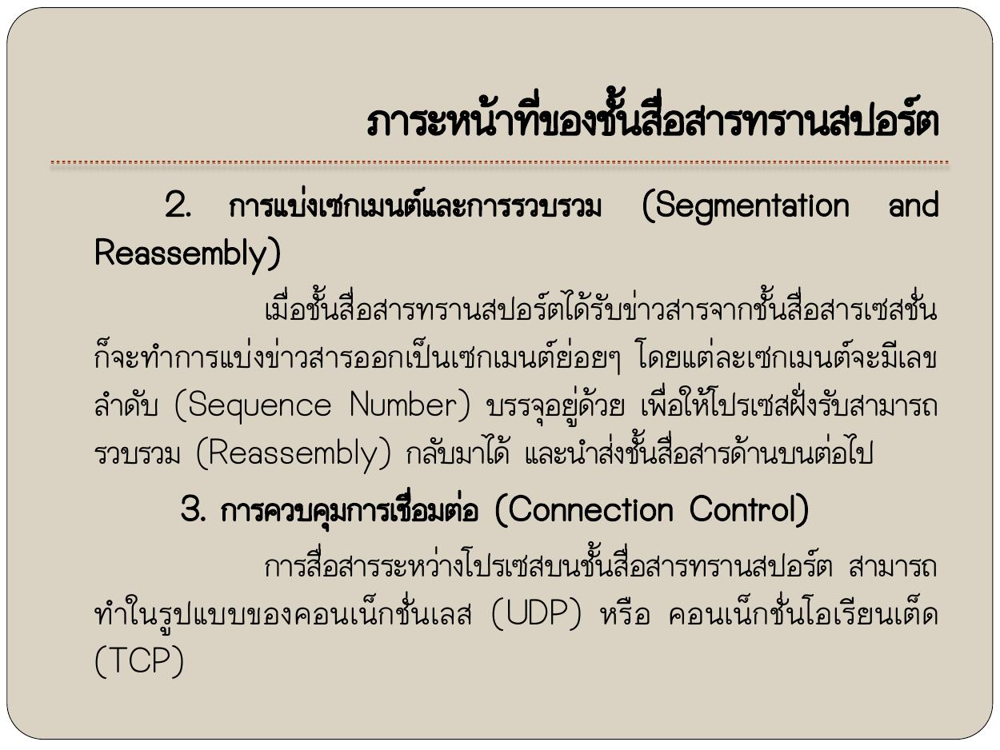
คลิกภาพเพื่อเปิดขยาย
อ่านข้อความต้นฉบับที่สกัดได้ (ไทย/อังกฤษตามไฟล์) ภาระหน้าทีข่ องชัน้ สือ่ สารทรานสปอร์ต
2. การแบ่งเซกเมนต์และการรวบรวม (Segmentation and
Reassembly)
เมื่อชั้นสื่อสารทรานสปอร์ตได้รับข่าวสารจากชั้นสื่อสารเซสชั่น
ก็จะทาการแบ่ งข่าวสารออกเป็นเซกเมนต์ ย่อยๆ โดยแต่ ละเซกเมนต์จ ะมีเลข
ลาดับ (Sequence Number) บรรจุอยู่ด้วย เพื่อให้โปรเซสฝั่งรับสามารถ
รวบรวม (Reassembly) กลับมาได้ และนาส่งชั้นสื่อสารด้านบนต่อไป
3. การควบคุมการเชื่อมต่อ (Connection Control)
การสื่อสารระหว่างโปรเซสบนชั้นสื่อสารทรานสปอร์ต สามารถ
ท าในรู ป แบบของคอนเน็ ก ชั่ น เลส (UDP) หรื อ คอนเน็ ก ชั่ น โอเรี ย นเต็ ด
(TCP) ทบทวนภาษาไทย: แบบจำลองเครือข่าย OSI และ TCP/IP
กลับสารบัญ ↑ หน้า 34 — ภาระหน้าทีข่ องชัน้ สือ่ สารทรานสปอร์ต ดูภาพต้นฉบับหน้า 34 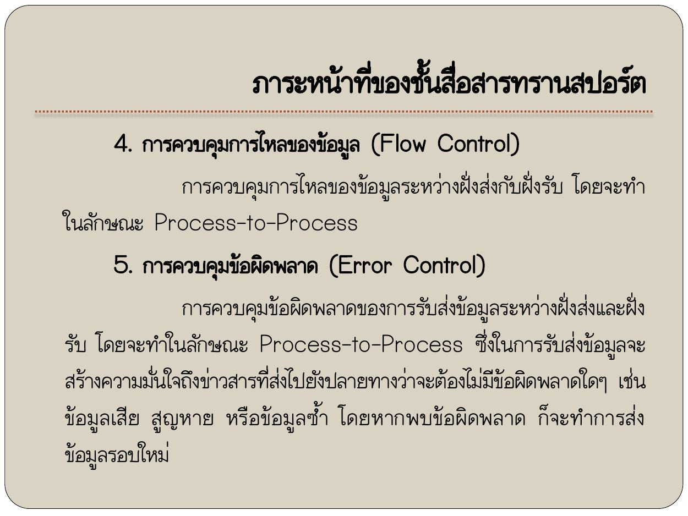
คลิกภาพเพื่อเปิดขยาย
อ่านข้อความต้นฉบับที่สกัดได้ (ไทย/อังกฤษตามไฟล์) ภาระหน้าทีข่ องชัน้ สือ่ สารทรานสปอร์ต
4. การควบคุมการไหลของข้อมูล (Flow Control)
การควบคุมการไหลของข้อมูลระหว่างฝั่งส่งกับฝั่งรับ โดยจะทา
ในลักษณะ Process-to-Process
5. การควบคุมข้อผิดพลาด (Error Control)
การควบคุมข้อผิดพลาดของการรับส่งข้อมูลระหว่างฝั่งส่งและฝั่ง
รับ โดยจะทาในลักษณะ Process-to-Process ซึ่งในการรับส่งข้อมูลจะ
สร้างความมั่นใจถึงข่าวสารที่ส่งไปยังปลายทางว่าจะต้องไม่มีข้อผิดพลาดใดๆ เช่น
ข้อมูลเสีย สูญหาย หรื อข้อมูลซ้า โดยหากพบข้อผิ ดพลาด ก็จะทาการส่ง
ข้อมูลรอบใหม่ ทบทวนภาษาไทย: แบบจำลองเครือข่าย OSI และ TCP/IP
กลับสารบัญ ↑ หน้า 35 — การส่งข่าวสารในรูปแบบ Process-to-Process ดูภาพต้นฉบับหน้า 35 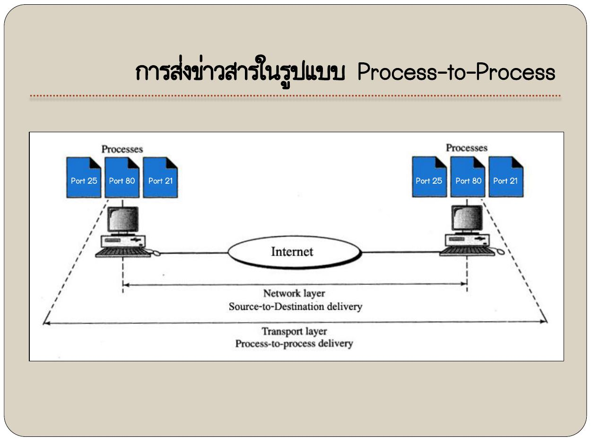
คลิกภาพเพื่อเปิดขยาย
อ่านข้อความต้นฉบับที่สกัดได้ (ไทย/อังกฤษตามไฟล์) การส่งข่าวสารในรูปแบบ Process-to-Process
Port 25 Port 80 Port 21 Port 25 Port 80 Port 21 ทบทวนภาษาไทย: แบบจำลองเครือข่าย OSI และ TCP/IP
กลับสารบัญ ↑ หน้า 36 — ชัน้ สือ่ สารเซสชัน่ Session Layer ดูภาพต้นฉบับหน้า 36 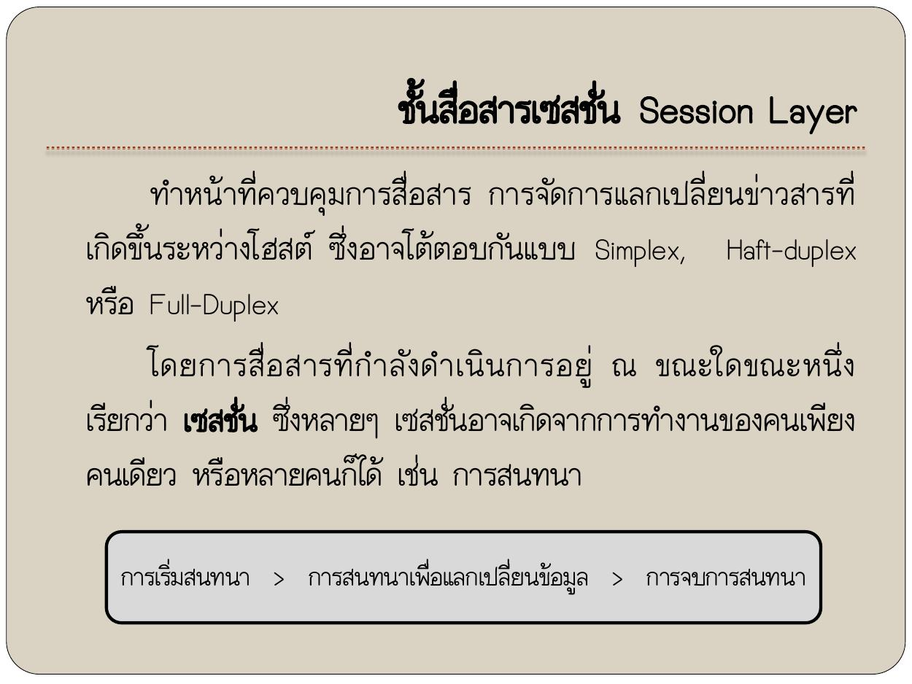
คลิกภาพเพื่อเปิดขยาย
อ่านข้อความต้นฉบับที่สกัดได้ (ไทย/อังกฤษตามไฟล์) ชัน้ สือ่ สารเซสชัน่ Session Layer
ทาหน้าที่ควบคุมการสื่อสาร การจัดการแลกเปลี่ยนข่าวสารที่
เกิดขึ้นระหว่างโฮสต์ ซึ่งอาจโต้ตอบกันแบบ Simplex, Haft-duplex
หรือ Full-Duplex
โดยการสื่ อ สารที่ ก าลั ง ด าเนิ น การอยู่ ณ ขณะใดขณะหนึ่ ง
เรียกว่า เซสชั่น ซึ่งหลายๆ เซสชั่นอาจเกิดจากการทางานของคนเพียง
คนเดียว หรือหลายคนก็ได้ เช่น การสนทนา
การเริ่มสนทนา > การสนทนาเพือ่ แลกเปลี่ยนข้อมูล > การจบการสนทนา ทบทวนภาษาไทย: แบบจำลองเครือข่าย OSI และ TCP/IP
กลับสารบัญ ↑ หน้า 37 — ภาระหน้าทีข่ องชัน้ สือ่ สารเซสชัน่ ดูภาพต้นฉบับหน้า 37 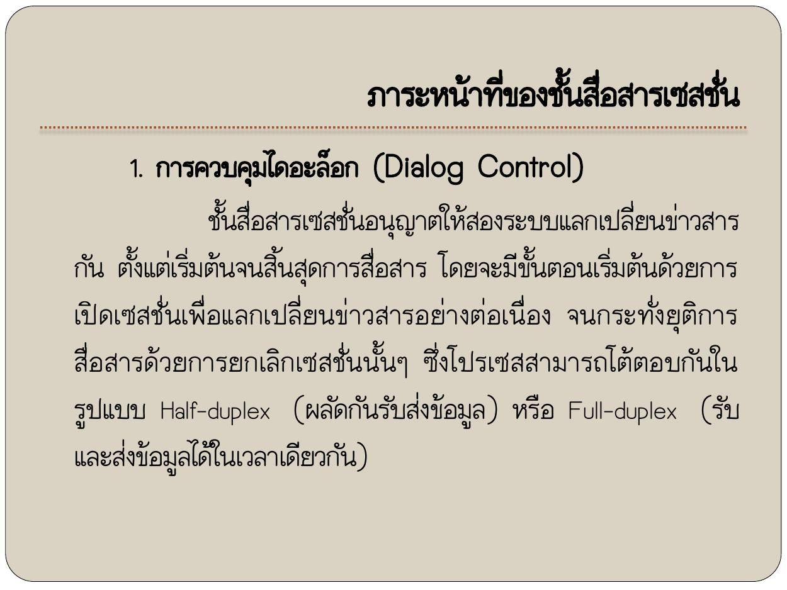
คลิกภาพเพื่อเปิดขยาย
อ่านข้อความต้นฉบับที่สกัดได้ (ไทย/อังกฤษตามไฟล์) ภาระหน้าทีข่ องชัน้ สือ่ สารเซสชัน่
1. การควบคุมไดอะล็อก (Dialog Control)
ชั้นสื่อสารเซสชั่นอนุญาตให้สองระบบแลกเปลี่ยนข่าวสาร
กัน ตั้งแต่เริ่มต้นจนสิ้นสุดการสื่อสาร โดยจะมีขั้นตอนเริ่มต้นด้วยการ
เปิดเซสชั่นเพื่อแลกเปลี่ยนข่าวสารอย่างต่อเนื่อง จนกระทั่งยุติการ
สื่อสารด้วยการยกเลิกเซสชั่นนั้นๆ ซึ่งโปรเซสสามารถโต้ตอบกันใน
รูปแบบ Half-duplex (ผลัดกันรับส่งข้อมูล) หรือ Full-duplex (รับ
และส่งข้อมูลได้ในเวลาเดียวกัน) ทบทวนภาษาไทย: แบบจำลองเครือข่าย OSI และ TCP/IP
กลับสารบัญ ↑ หน้า 38 — ภาระหน้าทีข่ องชัน้ สือ่ สารเซสชัน่ ดูภาพต้นฉบับหน้า 38 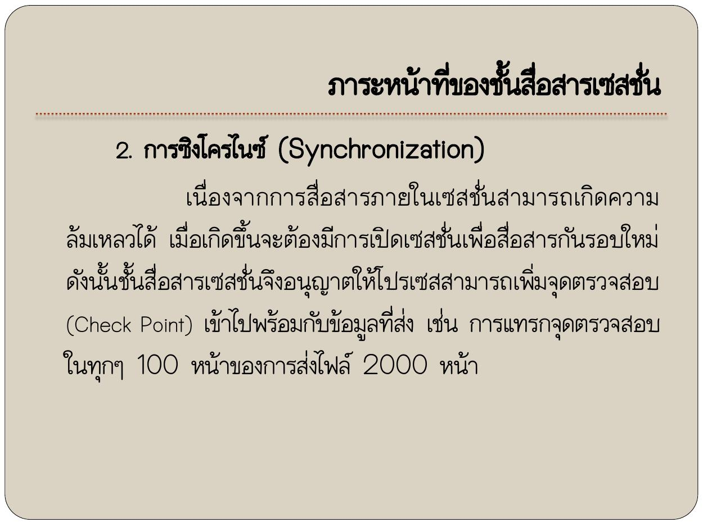
คลิกภาพเพื่อเปิดขยาย
อ่านข้อความต้นฉบับที่สกัดได้ (ไทย/อังกฤษตามไฟล์) ภาระหน้าทีข่ องชัน้ สือ่ สารเซสชัน่
2. การซิงโครไนซ์ (Synchronization)
เนื่ อ งจากการสื่ อสารภายในเซสชั่น สามารถเกิ ด ความ
ล้มเหลวได้ เมื่อเกิดขึ้นจะต้องมีการเปิดเซสชั่นเพื่อสื่อสารกันรอบใหม่
ดังนั้นชั้นสื่อสารเซสชั่นจึงอนุญาตให้โปรเซสสามารถเพิ่มจุดตรวจสอบ
(Check Point) เข้าไปพร้อมกับข้อมูลที่ส่ง เช่น การแทรกจุดตรวจสอบ
ในทุกๆ 100 หน้าของการส่งไฟล์ 2000 หน้า ทบทวนภาษาไทย: แบบจำลองเครือข่าย OSI และ TCP/IP
กลับสารบัญ ↑ หน้า 39 — ชัน้ สือ่ สารพรีเซนเตชัน่ Presentation Layer ดูภาพต้นฉบับหน้า 39 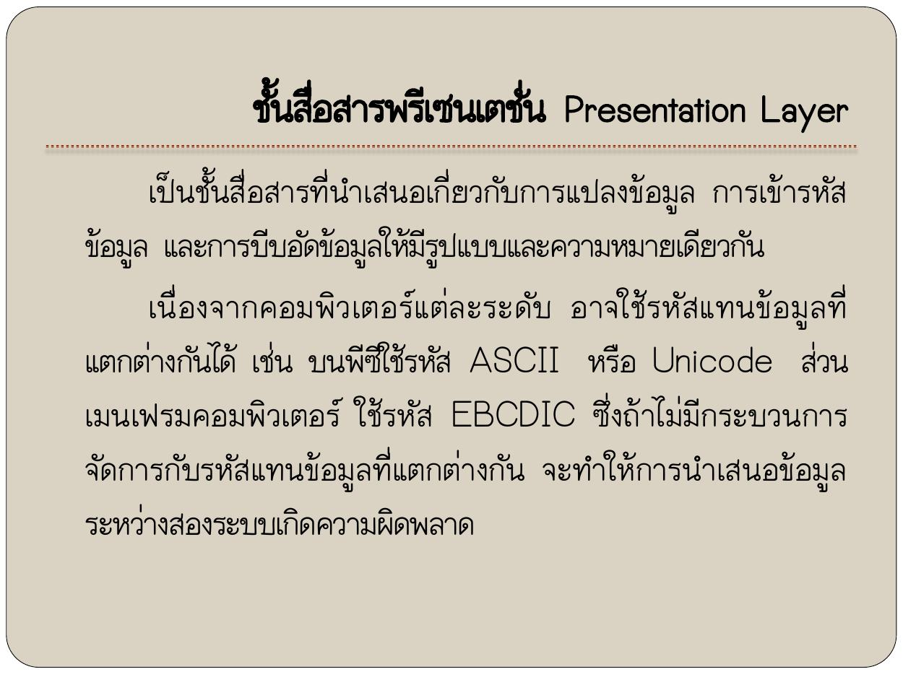
คลิกภาพเพื่อเปิดขยาย
อ่านข้อความต้นฉบับที่สกัดได้ (ไทย/อังกฤษตามไฟล์) ชัน้ สือ่ สารพรีเซนเตชัน่ Presentation Layer
เป็นชั้นสื่อสารที่นาเสนอเกี่ยวกับการแปลงข้อมูล การเข้ารหัส
ข้อมูล และการบีบอัดข้อมูลให้มีรูปแบบและความหมายเดียวกัน
เนื่ อ งจากคอมพิ ว เตอร์ แ ต่ ล ะระดั บ อาจใช้ ร หั ส แทนข้ อ มู ล ที่
แตกต่างกันได้ เช่น บนพีซีใช้รหัส ASCII หรือ Unicode ส่วน
เมนเฟรมคอมพิ วเตอร์ ใช้ รหั ส EBCDIC ซึ่งถ้ าไม่มี กระบวนการ
จัดการกับรหัสแทนข้อมูลที่แตกต่างกัน จะทาให้การนาเสนอข้อมูล
ระหว่างสองระบบเกิดความผิดพลาด ทบทวนภาษาไทย: แบบจำลองเครือข่าย OSI และ TCP/IP
กลับสารบัญ ↑ หน้า 40 — ชัน้ สือ่ สารพรีเซนเตชัน่ Presentation Layer ดูภาพต้นฉบับหน้า 40 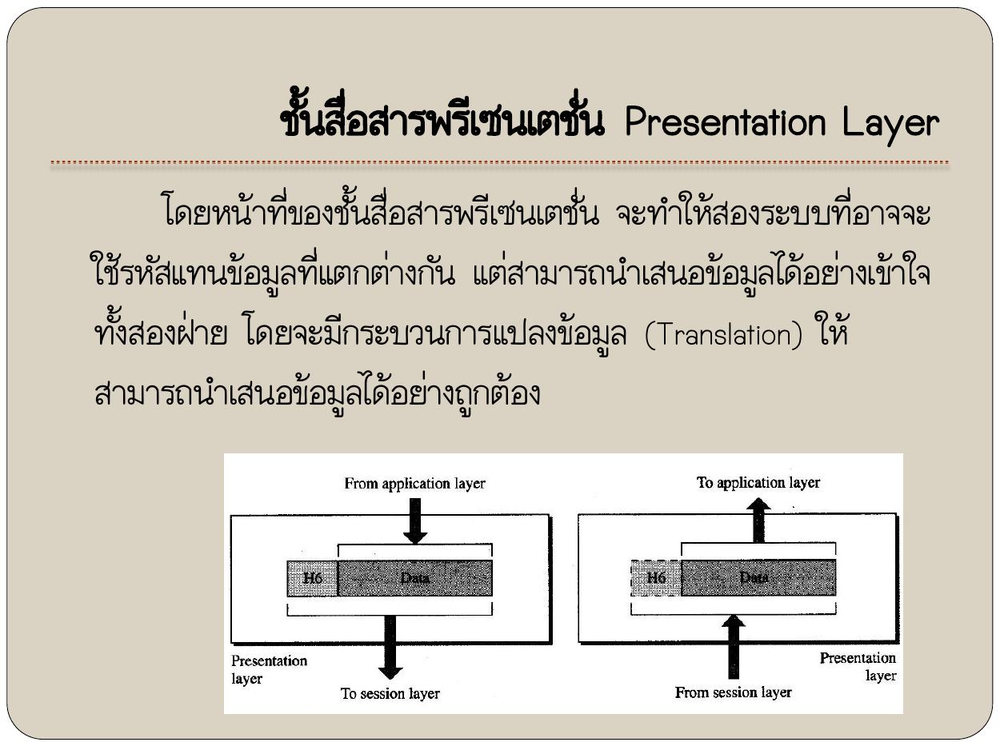
คลิกภาพเพื่อเปิดขยาย
อ่านข้อความต้นฉบับที่สกัดได้ (ไทย/อังกฤษตามไฟล์) ชัน้ สือ่ สารพรีเซนเตชัน่ Presentation Layer
โดยหน้าที่ของชั้นสื่อสารพรีเซนเตชั่น จะทาให้สองระบบที่อาจจะ
ใช้รหัสแทนข้อมูลที่แตกต่างกัน แต่สามารถนาเสนอข้อมูลได้อย่างเข้าใจ
ทั้งสองฝ่าย โดยจะมีกระบวนการแปลงข้อมูล (Translation) ให้
สามารถนาเสนอข้อมูลได้อย่างถูกต้อง ทบทวนภาษาไทย: แบบจำลองเครือข่าย OSI และ TCP/IP
กลับสารบัญ ↑ หน้า 41 — ภาระหน้าทีข่ องชัน้ สือ่ สารพรีเซนเตชัน่ ดูภาพต้นฉบับหน้า 41 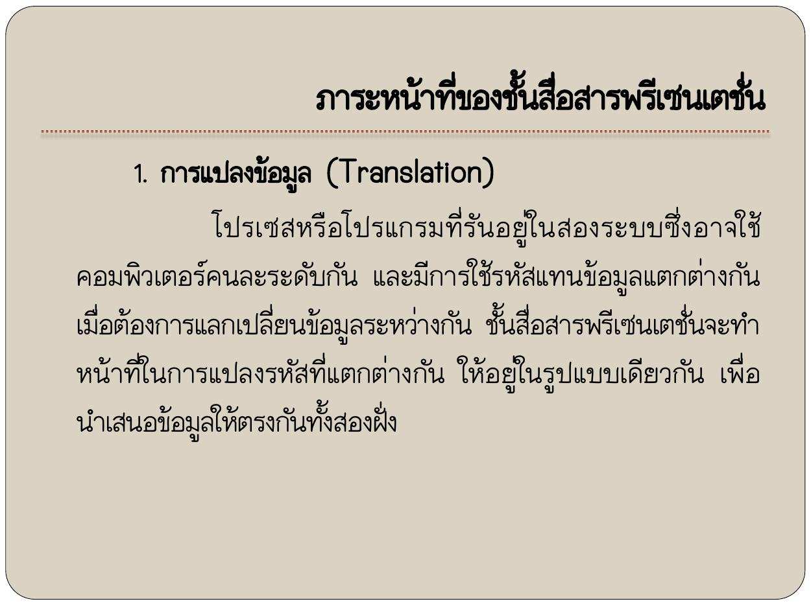
คลิกภาพเพื่อเปิดขยาย
อ่านข้อความต้นฉบับที่สกัดได้ (ไทย/อังกฤษตามไฟล์) ภาระหน้าทีข่ องชัน้ สือ่ สารพรีเซนเตชัน่
1. การแปลงข้อมูล (Translation)
โปรเซสหรื อ โปรแกรมที่ รั น อยู่ ใ นสองระบบซึ่ ง อาจใช้
คอมพิวเตอร์คนละระดับกัน และมีการใช้รหัสแทนข้อมูลแตกต่างกัน
เมื่อต้องการแลกเปลี่ยนข้อมูลระหว่างกัน ชั้นสื่อสารพรีเซนเตชั่นจะทา
หน้าที่ในการแปลงรหัสที่แตกต่างกัน ให้อยู่ในรูปแบบเดียวกัน เพื่อ
นาเสนอข้อมูลให้ตรงกันทั้งสองฝั่ง ทบทวนภาษาไทย: แบบจำลองเครือข่าย OSI และ TCP/IP
กลับสารบัญ ↑ หน้า 42 — ภาระหน้าทีข่ องชัน้ สือ่ สารพรีเซนเตชัน่ ดูภาพต้นฉบับหน้า 42 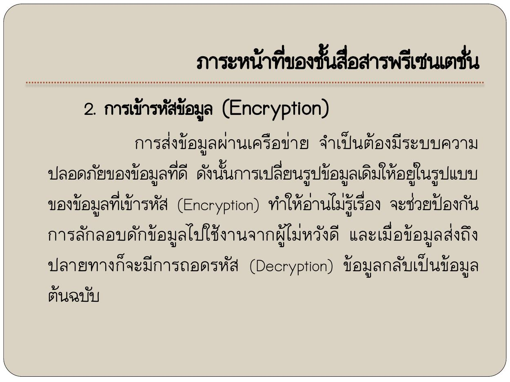
คลิกภาพเพื่อเปิดขยาย
อ่านข้อความต้นฉบับที่สกัดได้ (ไทย/อังกฤษตามไฟล์) ภาระหน้าทีข่ องชัน้ สือ่ สารพรีเซนเตชัน่
2. การเข้ารหัสข้อมูล (Encryption)
การส่ ง ข้ อมู ล ผ่ า นเครื อข่ า ย จ าเป็ น ต้ อ งมี ร ะบบความ
ปลอดภัยของข้อมูลที่ดี ดังนั้นการเปลี่ยนรูปข้อมูลเดิมให้อยู่ในรูปแบบ
ของข้อมูลที่เข้ารหัส (Encryption) ทาให้อ่านไม่รู้เรื่อง จะช่วยป้องกัน
การลั ก ลอบดั ก ข้ อ มู ล ไปใช้ ง านจากผู้ ไ ม่ ห วั ง ดี และเมื่ อ ข้ อ มู ล ส่ ง ถึ ง
ปลายทางก็ จ ะมี ก ารถอดรหั ส (Decryption) ข้ อ มู ล กลั บ เป็ น ข้ อ มู ล
ต้นฉบับ ทบทวนภาษาไทย: แบบจำลองเครือข่าย OSI และ TCP/IP
กลับสารบัญ ↑ หน้า 43 — ภาระหน้าทีข่ องชัน้ สือ่ สารพรีเซนเตชัน่ ดูภาพต้นฉบับหน้า 43 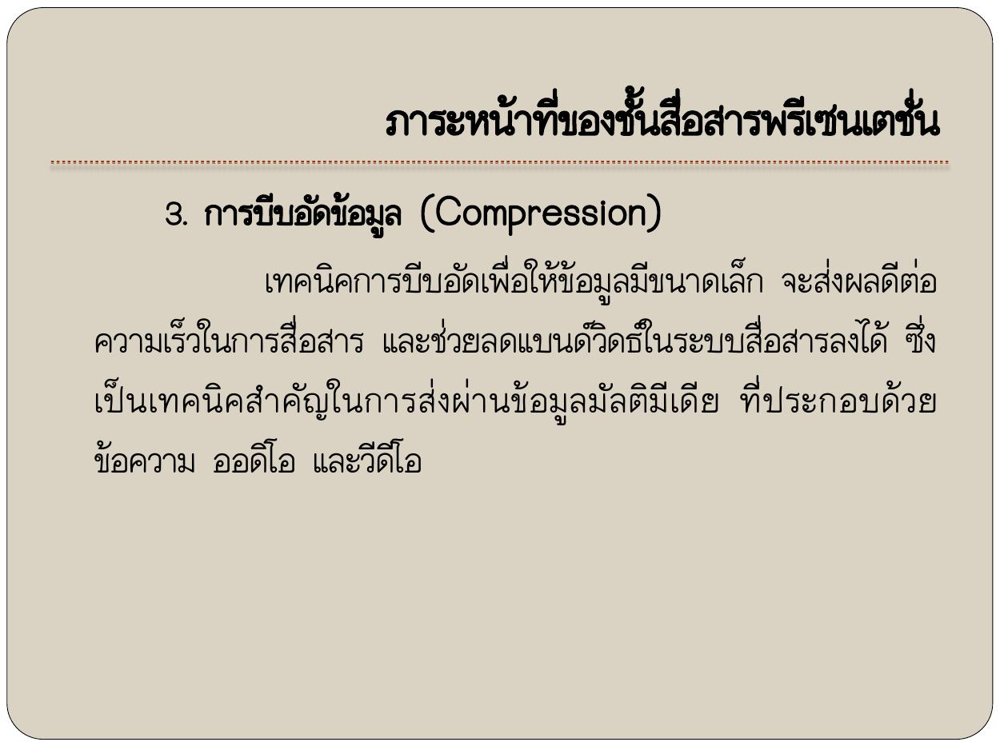
คลิกภาพเพื่อเปิดขยาย
อ่านข้อความต้นฉบับที่สกัดได้ (ไทย/อังกฤษตามไฟล์) ภาระหน้าทีข่ องชัน้ สือ่ สารพรีเซนเตชัน่
3. การบีบอัดข้อมูล (Compression)
เทคนิคการบีบอัดเพื่อให้ข้อมูลมีขนาดเล็ก จะส่งผลดีต่อ
ความเร็วในการสื่อสาร และช่วยลดแบนด์วิดธ์ในระบบสื่อสารลงได้ ซึ่ง
เป็ น เทคนิ ค ส าคั ญ ในการส่ ง ผ่ า นข้ อ มู ล มั ล ติ มี เ ดี ย ที่ ป ระกอบด้ ว ย
ข้อความ ออดิโอ และวีดีโอ ทบทวนภาษาไทย: แบบจำลองเครือข่าย OSI และ TCP/IP
กลับสารบัญ ↑ หน้า 44 — ชัน้ สือ่ สารแอปพลิเคชัน่ Application Layer ดูภาพต้นฉบับหน้า 44 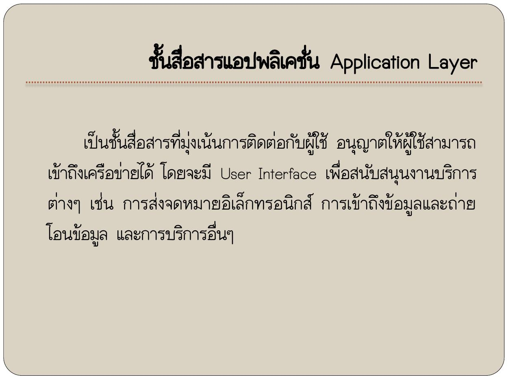
คลิกภาพเพื่อเปิดขยาย
อ่านข้อความต้นฉบับที่สกัดได้ (ไทย/อังกฤษตามไฟล์) ชัน้ สือ่ สารแอปพลิเคชัน่ Application Layer
เป็นชั้นสื่อสารที่มุ่งเน้นการติดต่อกับผู้ใช้ อนุญาตให้ผู้ใช้สามารถ
เข้าถึงเครือข่ายได้ โดยจะมี User Interface เพื่อสนับสนุนงานบริการ
ต่างๆ เช่น การส่งจดหมายอิเล็กทรอนิกส์ การเข้าถึงข้อมูลและถ่าย
โอนข้อมูล และการบริการอื่นๆ ทบทวนภาษาไทย: แบบจำลองเครือข่าย OSI และ TCP/IP
กลับสารบัญ ↑ หน้า 45 — ชัน้ สือ่ สารแอปพลิเคชัน่ Application Layer ดูภาพต้นฉบับหน้า 45 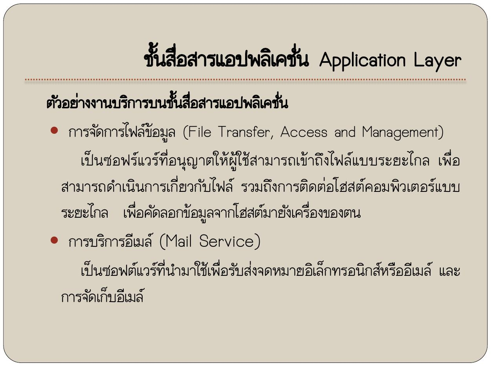
คลิกภาพเพื่อเปิดขยาย
อ่านข้อความต้นฉบับที่สกัดได้ (ไทย/อังกฤษตามไฟล์) ชัน้ สือ่ สารแอปพลิเคชัน่ Application Layer
ตัวอย่างงานบริการบนชั้นสื่อสารแอปพลิเคชั่น
การจัดการไฟล์ข้อมูล (File Transfer, Access and Management)
เป็นซอฟร์ แวร์ ที่อนุญาตให้ผู้ ใ ช้ สามารถเข้าถึ ง ไฟล์แบบระยะไกล เพื่อ
สามารถดาเนินการเกี่ยวกับไฟล์ รวมถึงการติดต่อโฮสต์คอมพิวเตอร์แบบ
ระยะไกล เพื่อคัดลอกข้อมูลจากโฮสต์มายังเครื่องของตน
การบริการอีเมล์ (Mail Service)
เป็นซอฟต์แวร์ที่นามาใช้เพื่อรับส่งจดหมายอิเล็กทรอนิกส์หรืออีเมล์ และ
การจัดเก็บอีเมล์ ทบทวนภาษาไทย: แบบจำลองเครือข่าย OSI และ TCP/IP
กลับสารบัญ ↑ หน้า 46 — การทางานของแบบจาลอง OSI ดูภาพต้นฉบับหน้า 46 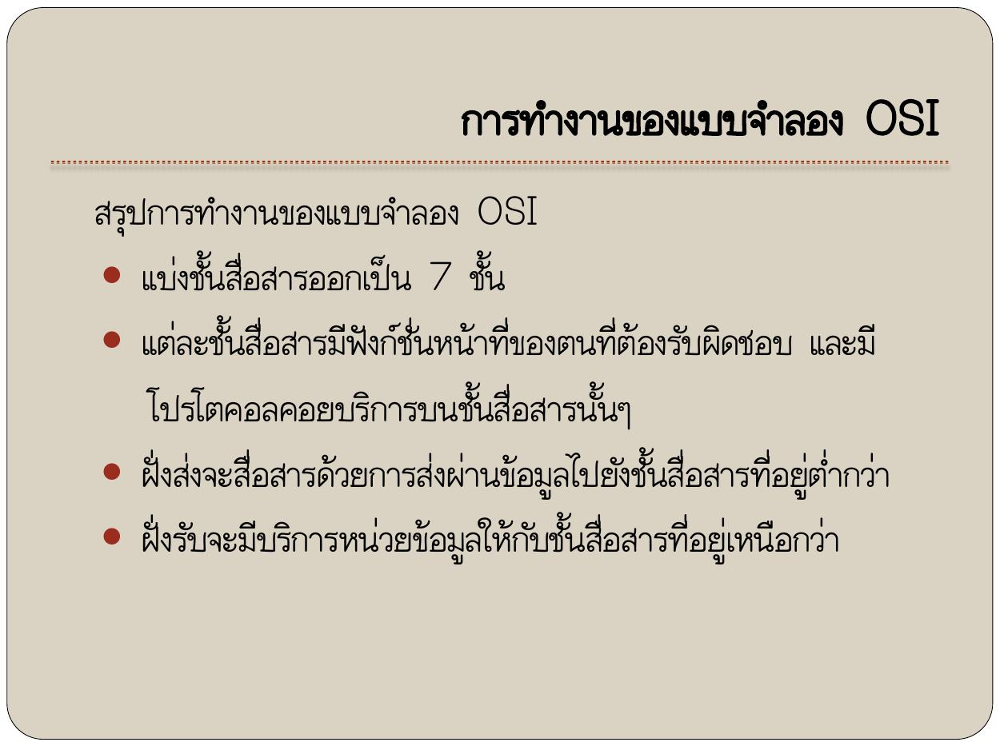
คลิกภาพเพื่อเปิดขยาย
อ่านข้อความต้นฉบับที่สกัดได้ (ไทย/อังกฤษตามไฟล์) การทางานของแบบจาลอง OSI
สรุปการทางานของแบบจาลอง OSI
แบ่งชั้นสื่อสารออกเป็น 7 ชั้น
แต่ละชั้นสื่อสารมีฟังก์ชั่นหน้าที่ของตนที่ต้องรับผิดชอบ และมี
โปรโตคอลคอยบริการบนชั้นสื่อสารนั้นๆ
ฝั่งส่งจะสื่อสารด้วยการส่งผ่านข้อมูลไปยังชั้นสื่อสารที่อยู่ต่ากว่า
ฝั่งรับจะมีบริการหน่วยข้อมูลให้กับชั้นสื่อสารที่อยู่เหนือกว่า ทบทวนภาษาไทย: แบบจำลองเครือข่าย OSI และ TCP/IP
กลับสารบัญ ↑ หน้า 47 — แบบจาลองอินเทอร์เน็ต (Internet Model) ดูภาพต้นฉบับหน้า 47 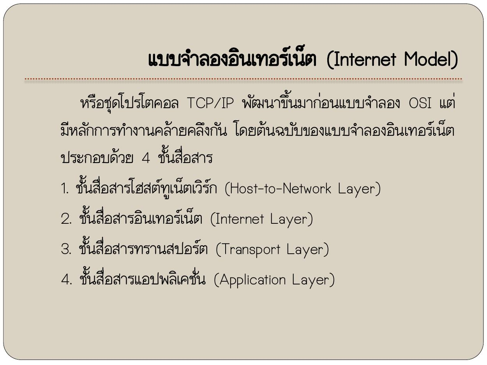
คลิกภาพเพื่อเปิดขยาย
อ่านข้อความต้นฉบับที่สกัดได้ (ไทย/อังกฤษตามไฟล์) แบบจาลองอินเทอร์เน็ต (Internet Model)
หรือชุดโปรโตคอล TCP/IP พัฒนาขึ้นมาก่อนแบบจาลอง OSI แต่
มีหลักการทางานคล้ายคลึงกัน โดยต้นฉบับของแบบจาลองอินเทอร์เน็ต
ประกอบด้วย 4 ชั้นสื่อสาร
1. ชั้นสื่อสารโฮสต์ทูเน็ตเวิร์ก (Host-to-Network Layer)
2. ชั้นสื่อสารอินเทอร์เน็ต (Internet Layer)
3. ชั้นสื่อสารทรานสปอร์ต (Transport Layer)
4. ชั้นสื่อสารแอปพลิเคชั่น (Application Layer) ทบทวนภาษาไทย: แบบจำลองเครือข่าย OSI และ TCP/IP
กลับสารบัญ ↑ หน้า 48 — แบบจาลองอินเทอร์เน็ต (Internet Model) ดูภาพต้นฉบับหน้า 48 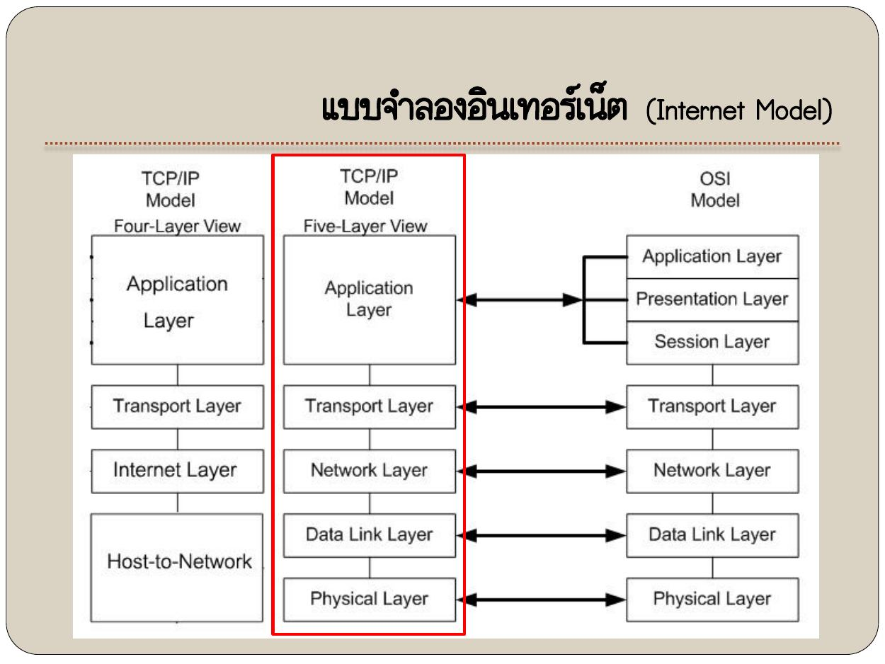
คลิกภาพเพื่อเปิดขยาย
อ่านข้อความต้นฉบับที่สกัดได้ (ไทย/อังกฤษตามไฟล์) แบบจาลองอินเทอร์เน็ต (Internet Model) ทบทวนภาษาไทย: แบบจำลองเครือข่าย OSI และ TCP/IP
กลับสารบัญ ↑ หน้า 49 — โปรโตคอลแต่ละชั้นสือ่ สารในแบบจาลองอินเทอร์เน็ต ดูภาพต้นฉบับหน้า 49 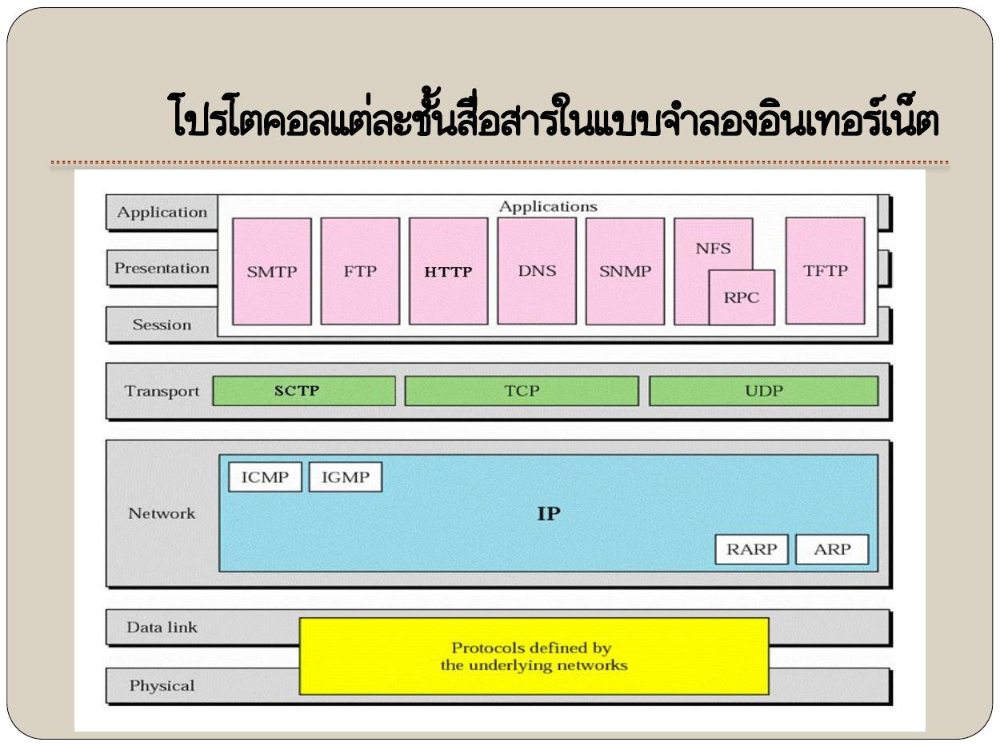
คลิกภาพเพื่อเปิดขยาย
อ่านข้อความต้นฉบับที่สกัดได้ (ไทย/อังกฤษตามไฟล์) โปรโตคอลแต่ละชั้นสือ่ สารในแบบจาลองอินเทอร์เน็ต ทบทวนภาษาไทย: แบบจำลองเครือข่าย OSI และ TCP/IP
กลับสารบัญ ↑ หน้า 50 — ชัน้ สือ่ สารฟิสคิ ลั และดาต้าลิงค์ ดูภาพต้นฉบับหน้า 50 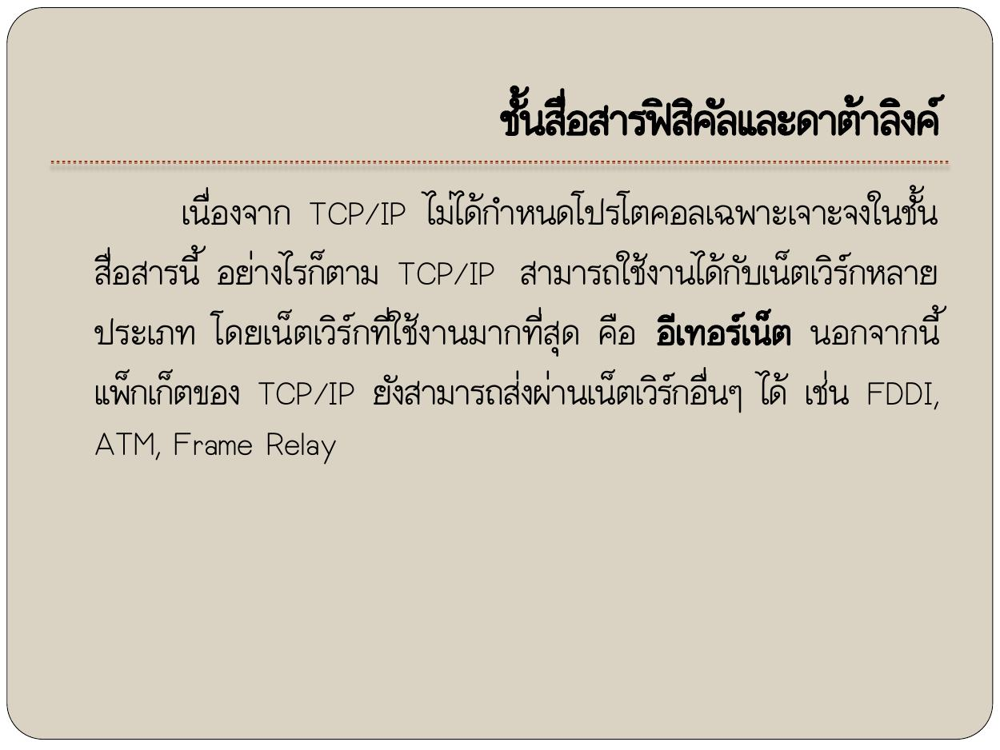
คลิกภาพเพื่อเปิดขยาย
อ่านข้อความต้นฉบับที่สกัดได้ (ไทย/อังกฤษตามไฟล์) ชัน้ สือ่ สารฟิสคิ ลั และดาต้าลิงค์
เนื่องจาก TCP/IP ไม่ได้กาหนดโปรโตคอลเฉพาะเจาะจงในชั้น
สื่อสารนี้ อย่างไรก็ตาม TCP/IP สามารถใช้งานได้กับเน็ตเวิร์กหลาย
ประเภท โดยเน็ตเวิร์กที่ใช้งานมากที่สุด คือ อีเทอร์เน็ต นอกจากนี้
แพ็กเก็ตของ TCP/IP ยังสามารถส่งผ่านเน็ตเวิร์กอื่นๆ ได้ เช่น FDDI,
ATM, Frame Relay ทบทวนภาษาไทย: แบบจำลองเครือข่าย OSI และ TCP/IP
กลับสารบัญ ↑ หน้า 51 — ชัน้ สือ่ สารเน็ตเวิรก์ ดูภาพต้นฉบับหน้า 51 คลิกภาพเพื่อเปิดขยาย
อ่านข้อความต้นฉบับที่สกัดได้ (ไทย/อังกฤษตามไฟล์) ชัน้ สือ่ สารเน็ตเวิรก์
ทาหน้าที่ เลือ กเส้ นทางเพื่อจั ดส่ง ข้อมู ลในรูป แบบของแพ็ก เก็ ต
โดยจะมีอัลกอริทึมในการกาหนดเส้นทาง (Routing Algorithms) ที่
เหมาะสม เพื่อนาส่งข้อมูลให้ถึงปลายทาง
โปรโตคอลที่สาคัญในชั้นสื่อสารนี้ คือ IP เป็นโปรโตคอลแบบ
Host-to-Host ซึ่งจะทางานร่วมกับเร้าเตอร์ในการส่งข้อมูลไปตาม
เครื อข่า ยต่า งๆ จนถึงปลายทาง ด้วยวิ ธีก ารส่ งข้อ มูล แบบแพ็ก เก็ ต
สวิตชิ่ง ทบทวนภาษาไทย: แบบจำลองเครือข่าย OSI และ TCP/IP
กลับสารบัญ ↑ หน้า 52 — ชัน้ สือ่ สารเน็ตเวิรก์ ดูภาพต้นฉบับหน้า 52 คลิกภาพเพื่อเปิดขยาย
อ่านข้อความต้นฉบับที่สกัดได้ (ไทย/อังกฤษตามไฟล์) ชัน้ สือ่ สารเน็ตเวิรก์
นอกจากนี้ ยังมีโปรโตคอลอื่นๆ ที่ช่วยให้การทางานของ
โปรโตคอล IP เป็นไปด้วยดี เช่น
1. ICMP (Internet Control Protocol)
ใช้สาหรับรายงานข้อผิดพลาดในระหว่างการรับส่งแพ็กเก็ต IP
2. IGMP (Internet Group Message Protocol)
ใช้สาหรับการรายงานโฮสต์ที่เป็นสมาชิกในกลุ่มของมัลติคาสต์
3. ARP (Address Resolution Protocol)
ใช้สาหรับการแปลงหมายเลขไอพี ให้เป็น MAC Address
4. RARP (Reversed Address Resolution Protocol)
ใช้สาหรับการแปลง MAC Address ให้เป็นหมายเลขไอพี ทบทวนภาษาไทย: แบบจำลองเครือข่าย OSI และ TCP/IP
กลับสารบัญ ↑ หน้า 53 — ชัน้ สือ่ สารทรานสปอร์ต ดูภาพต้นฉบับหน้า 53 คลิกภาพเพื่อเปิดขยาย
อ่านข้อความต้นฉบับที่สกัดได้ (ไทย/อังกฤษตามไฟล์) ชัน้ สือ่ สารทรานสปอร์ต
ในชั้นสื่อสารนี้ จะประกอบด้วยโปรโตคอลที่ทาหน้าที่ในการส่ง
มอบข่าวสารจากโปรเซสหนึ่งไปยังโปรเซสอื่นๆ คือ TCP และ UDP
นอกจากนี้ยังมีโปรโตคอลที่นามาใช้ในการสนับสนุนงานประยุกต์
ทางด้านเสียงบนอินเตอร์เน็ต คือ SCTP ทบทวนภาษาไทย: แบบจำลองเครือข่าย OSI และ TCP/IP
กลับสารบัญ ↑ หน้า 54 — โปรโตคอล TCP ดูภาพต้นฉบับหน้า 54 คลิกภาพเพื่อเปิดขยาย
อ่านข้อความต้นฉบับที่สกัดได้ (ไทย/อังกฤษตามไฟล์) โปรโตคอล TCP
โปรโตคอล TCP เป็นโปรโตคอลแบบคอนเน็กชั่นโอเรียนเต็ด ที่จะ
สร้างคอนเน็กชั่นระหว่างต้นทางและปลายทาง โดย
1. ทาการสร้างคอนเน็กชั่น เพื่อเป็นการยอมรับข้อตกลงในข้อกาหนด
ด้านการสื่อสาร (ความเร็ว, แบนด์วิดธ์)
2. ทาการสร้างเส้นทาง เพื่อลาเลียงข้อมูลจากต้นทางไปยังปลายทาง
3. ยุติการเชื่อมต่อเมื่อรับส่งข้อมูลเสร็จสมบูรณ์
TCP ยังมีกลไกในการตรวจสอบข้อมูลที่ส่งไปว่าถึงมือผู้รับหรือไม่ เพื่อ
เป็นการรับประกันการส่งข้อมูลถึงปลายทาง โดยจะทาการส่งแพ็กเก็ตรอบ
ใหม่ ในกรณีที่แพ็กเก็ตหาย หรือกาจัดแพ็กเก็ตที่ซ้าออกไป ทบทวนภาษาไทย: แบบจำลองเครือข่าย OSI และ TCP/IP
กลับสารบัญ ↑ หน้า 55 — โปรโตคอล TCP ดูภาพต้นฉบับหน้า 55 คลิกภาพเพื่อเปิดขยาย
อ่านข้อความต้นฉบับที่สกัดได้ (ไทย/อังกฤษตามไฟล์) โปรโตคอล TCP ทบทวนภาษาไทย: แบบจำลองเครือข่าย OSI และ TCP/IP
กลับสารบัญ ↑ หน้า 56 — โปรโตคอล UDP ดูภาพต้นฉบับหน้า 56 คลิกภาพเพื่อเปิดขยาย
อ่านข้อความต้นฉบับที่สกัดได้ (ไทย/อังกฤษตามไฟล์) โปรโตคอล UDP
โปรโตคอล UDP เป็นโปรโตคอลแบบคอนเน็กชั่นเลส จะไม่มีการ
สร้ า งคอนเน็ ก ชั่ น เพื่ อ เชื่อมต่ อระหว่ า งโฮสต์ แต่จ ะส่ ง ข้ อ มู ล ทั น ที ที่
ต้องการ และคาดหวังว่า ข้อมูลที่ส่งไปนี้ ฝั่งปลายทางคงได้รับ ทบทวนภาษาไทย: แบบจำลองเครือข่าย OSI และ TCP/IP
กลับสารบัญ ↑ หน้า 57 — ชัน้ สือ่ สารแอปพลิเคชัน่ ดูภาพต้นฉบับหน้า 57 คลิกภาพเพื่อเปิดขยาย
อ่านข้อความต้นฉบับที่สกัดได้ (ไทย/อังกฤษตามไฟล์) ชัน้ สือ่ สารแอปพลิเคชัน่
การบริการต่างๆ ในชั้นสื่อสารนี้ จะเน้นการอานวยความสะดวก
แก่ผู้ใช้ด้วยโปรโตคอลต่างๆ ในรูปแบบของแอปพลิเคชั่น ทาให้สามารถ
ส่งไฟล์ ใช้งานอีเมล์ หรือถ่ายโอนข้อมูลระหว่างกัน
โปรโตคอล FTP สาหรับถ่ายโอนข้อมูลระหว่างกัน
โปรโตคอล SMTP ใช้สาหรับรับส่งอีเมล์ระหว่างเมล์เซิร์ฟเวอร์
โปรโตคอล HTTP ใช้สาหรับการรับส่งไฟล์เว็บเพจระหว่างเว็บ
บราวเซอร์และเว็บเซิร์ฟเวอร์
โปรโตคอล IMAP ใช้สาหรับดาวน์โหลดอีเมล์มาจากเมล์
เซิร์ฟเวอร์ ทบทวนภาษาไทย: แบบจำลองเครือข่าย OSI และ TCP/IP
กลับสารบัญ ↑